<!doctype html>
<html lang="en">
<head>
  <meta charset="utf-8">
  <meta name="viewport" content="width=device-width, initial-scale=1">
  <title>arxiv digest — 2026-06-23</title>
  <style>
:root {
  --bg: #ffffff;
  --fg: #1f2328;
  --muted: #59636e;
  --border: #d0d7de;
  --card: #f6f8fa;
  --link: #0969da;
}
body {
  max-width: 980px;
  margin: 0 auto;
  padding: 2rem 1rem 5rem;
  font-family: -apple-system, BlinkMacSystemFont, "Segoe UI", Helvetica, Arial, sans-serif;
  line-height: 1.55;
  color: var(--fg);
  background: var(--bg);
}
a { color: var(--link); }
img { max-width: 100%; height: auto; }
pre, code { background: var(--card); border-radius: 6px; }
pre { padding: 1rem; overflow-x: auto; }
blockquote { border-left: 4px solid var(--border); padding-left: 1rem; color: var(--muted); }
details { margin: 0.6rem 0; }
summary { cursor: pointer; font-weight: 600; }
.paper-figures-scroll {
  display: flex;
  gap: 1rem;
  overflow-x: auto;
  overscroll-behavior-x: contain;
  padding: 0.75rem 0.25rem 1rem;
  margin: 1rem 0 1.25rem;
  border-top: 1px solid var(--border);
  border-bottom: 1px solid var(--border);
  scroll-snap-type: x proximity;
}
.paper-figure-card {
  flex: 0 0 min(260px, 72vw);
  scroll-snap-align: start;
  background: var(--card);
  border: 1px solid var(--border);
  border-radius: 12px;
  padding: 0.55rem;
}
.paper-figure-card img {
  display: block;
  width: 100%;
  max-height: 240px;
  object-fit: contain;
  background: white;
  border-radius: 8px;
}
.paper-figure-caption {
  display: block;
  margin-top: 0.5rem;
  color: var(--muted);
  font-size: 0.85rem;
}
.figure-strip-hint {
  color: var(--muted);
  font-size: 0.9rem;
  margin-bottom: -0.3rem;
}
</style>
  <!-- MathJax: renders $...$ inline math and $$...$$ display math, plus
       \(...\) and \[...\]. Loaded from the official CDN; works offline
       once cached. Configured to skip code/pre blocks so arxiv IDs that
       look like dollar amounts don't get mangled. -->
  <script>
    window.MathJax = {
      tex: {
        inlineMath: [['$', '$'], ['\\(', '\\)']],
        displayMath: [['$$', '$$'], ['\\[', '\\]']],
        processEscapes: true,
        processEnvironments: true
      },
      options: {
        skipHtmlTags: ['script', 'noscript', 'style', 'textarea', 'pre', 'code'],
        ignoreHtmlClass: 'tex2jax_ignore',
        processHtmlClass: 'tex2jax_process'
      }
    };
  </script>
  <script id="MathJax-script" async
    src="https://cdn.jsdelivr.net/npm/mathjax@3/es5/tex-chtml.js"></script>
</head>
<body>
<header style="background-color: #333; color: white; padding: 15px; margin-bottom: 20px;">
  <h1 style="margin: 0; font-size: 24px;">
    <a href="https://ochelpan.github.io/arXiv_clean/" style="color: white; text-decoration: none;">Main</a>
  </h1>
</header>

<h1>Daily arXiv Report</h1>

<hr>
<p>
<a href="index.html">← Index</a>
 · <a href="papers_01.html">← Previous</a> · <a href="papers_03.html">Next →</a>
</p>
<hr>

<h2>Papers 21–40</h2>
<p><a id="paper-2606.22732"></a></p>
<h3 id="protecting-qubits-from-purcell-decay-via-permanent-dipoles"><a href="http://arxiv.org/abs/2606.22732v1">Protecting Qubits from Purcell Decay via Permanent Dipoles</a></h3>
<p><strong>Authors:</strong> Alex Krasnok<br>
<strong>Type:</strong> theory · <strong>Category:</strong> other · <strong>PDF:</strong> <a href="https://arxiv.org/pdf/2606.22732v1">https://arxiv.org/pdf/2606.22732v1</a><br>
<strong>Analysis basis:</strong> full PDF text, analyzed in chunks
<strong>Topic relevance:</strong> 🔥 <code>methods for driven-dissipative</code> <strong>4/5</strong> · <code>correlated / nonlocal dissipation</code> <strong>3/5</strong> · <code>correlated cavity matter</code> <strong>3/5</strong> · <code>Tavis-Cummings &amp; cavity-many-emitter</code> <strong>2/5</strong> · <code>driven-dissipative phase transition</code> <strong>2/5</strong> · <code>Keldysh / 2PI / non-Gaussian methods</code> <strong>1/5</strong> · <code>analog quantum simulation</code> <strong>1/5</strong> · <code>non-equilibrium dynamics</code> <strong>1/5</strong> · <code>non-equilibrium universality</code> <strong>1/5</strong></p>
<div class="figure-strip-hint">↔ Scroll figures horizontally</div>
<div class="paper-figures-scroll">
<figure class="paper-figure-card">
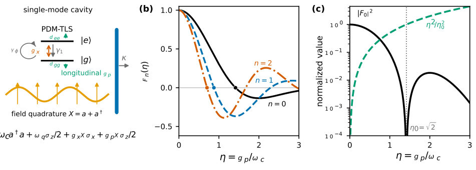
<figcaption class="paper-figure-caption"><b>Fig 1.</b> FIG. 1. Permanent-dipole exchange suppression. (a) The model contains a transverse exchange coupling gx and a longitudinal permanent-dipole coupling gp. (b) Franck–Condon factors Fn(η) set the exchange strength in the first three excitation manifolds; markers denote the first zeros. (c) In the lowest manifold, the displaced-RWA transverse-exchange proxy collapses near η0 = √</figcaption>
</figure>
<figure class="paper-figure-card">
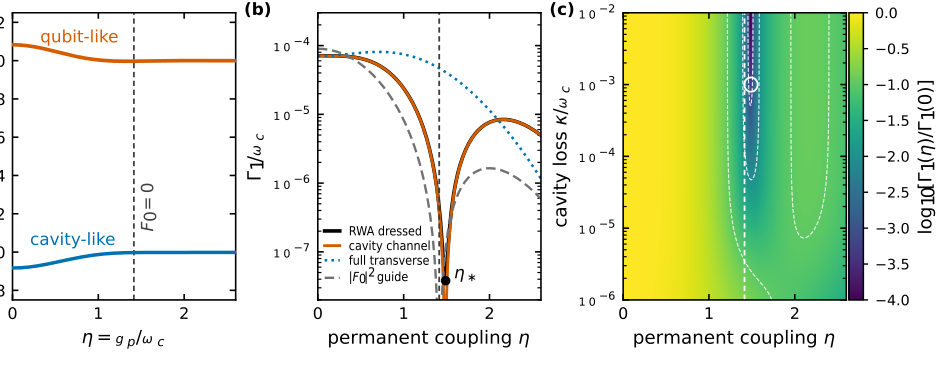
<figcaption class="paper-figure-caption"><b>Fig 2.</b> FIG. 2. Dressed open-system rates. (a) Qubit-like and cavity-like transition frequencies in the displaced rotating-wave model versus longitudinal coupling η. (b) Dressed qubit-like decay compared to the full-transverse calculation and the analytical |F0(η)|2 guide. (c) Rate reduction versus η and normalized cavity decay κ/ωc. Panel (a) plots Hamiltonian diagonalization; panels (b) and (c) plot numerical dressed-state evaluations of the zero-temperature secular Lindblad rates from Eq. (8).</figcaption>
</figure>
<figure class="paper-figure-card">
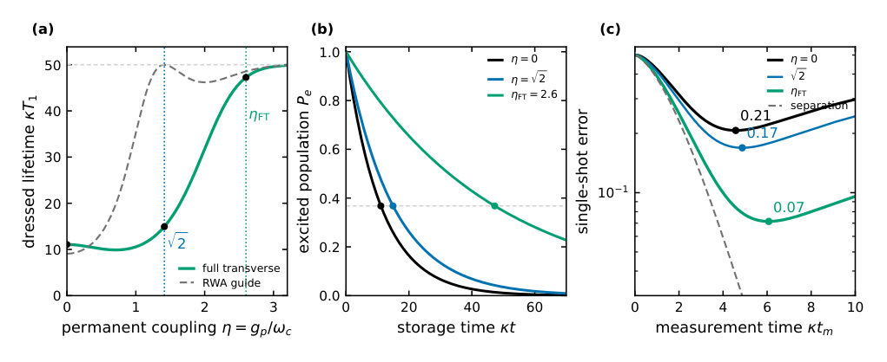
<figcaption class="paper-figure-caption"><b>Fig 3.</b> FIG. 3. Storage and longitudinal-readout benchmark using full-transverse dressed rates. (a) Normalized dressed lifetime κT1 versus permanent-dipole displacement. The dashed curve is the displaced-RWA analytical guide, while the solid curve uses the full-transverse dressed cavity-loss rate in Eq. (10). Vertical dotted lines mark η0 = √</figcaption>
</figure>
</div>

<p><strong>Summary.</strong> The paper proposes using permanent electric dipoles within a qubit coupled to a cavity to suppress Purcell decay. By exploiting the dipole's ability to create channel-selective field displacements, it achieves significant protection against radiative loss while maintaining necessary readout signals. This offers a pathway for building high-fidelity quantum devices by engineering dissipation itself.</p>
<p><strong>Why it may be interesting.</strong> This work provides an advanced theoretical tool for engineering dissipation channels in superconducting or solid-state qubits, moving beyond simple filtering to utilize intrinsic material properties (dipoles) for quantum control.</p>
<details>
<summary>Detailed structure</summary>
<p><strong>Main problem.</strong> The primary challenge addressed is Purcell decay, a loss mechanism in cavity Quantum Electrodynamics (QED) that limits fast qubit readout.</p>
<p><strong>Main result.</strong> Permanent electric dipoles can provide an internal, channel-selective form of Purcell protection, significantly increasing the qubit lifetime and reducing readout error rates.</p>
<p><strong>Method.</strong> The analysis uses open-system quantum dynamics by calculating dressed decay rates derived from a Lindblad master equation in the system's eigenbasis.</p>
<p><strong>Model / system.</strong> The model involves a qubit coupled to a cavity resonator, incorporating an additional interaction term mediated by a permanent electric dipole moment. The Hamiltonian includes transverse ($g_x$) and longitudinal ($g_p$) coupling terms.</p>
<p><strong>Key observables.</strong> Normalized lifetime ($\kappa T_1$), single-shot readout error ($\epsilon_{tot}$), and the decay rates ($\Gamma_i$) for different coupling regimes.</p>
<p><strong>Important parameters / regimes.</strong> The dimensionless longitudinal coupling $\eta = g_p / \omega_c$, which controls the degree of dipole-induced field displacement.</p>
<p><strong>Assumptions / limitations.</strong> The analysis compares results from a simplified displaced Rotating-Wave Approximation (RWA) against a more rigorous full-transverse model, noting that the RWA zero is not physically exact.</p>
<p><strong>Figures summary.</strong> Figures illustrate the competition between transverse and longitudinal couplings, showing how the decay rate suppression shifts from an analytical RWA zero ($\eta=\sqrt{2}$) to a larger operating point ($\eta_{FT}=2.60$) in the full model.</p>
<p><strong>Paper structure.</strong> The paper introduces the problem of Purcell decay, develops a Hamiltonian incorporating dipole coupling, calculates open-system decay rates using dressed states, and benchmarks performance improvements by comparing RWA predictions against full-transverse calculations.</p>
</details>
<details>
<summary>Abstract</summary>
<p>Reading out a qubit often requires coupling it to a resonator, but that same resonator can also give the qubit an extra path to decay. Here, we study a way to reduce this loss using a built-in permanent electric dipole. The dipole shifts the cavity field in different directions for the qubit ground and excited states. This shift makes the relevant wave functions overlap less, which weakens the transverse qubit--cavity exchange that causes Purcell decay. In a simplified displaced rotating-wave model, this exchange vanishes at $η=\sqrt{2}$. In the full transverse model, this exact zero is lifted, but strong suppression remains at a larger dipole-induced displacement. Using dressed open-system decay rates, we find an operating point where the cavity-mediated decay is strongly reduced while the longitudinal readout signal remains finite. For the benchmark studied here, at fixed pointer separation, the normalized lifetime increases from $κT_1=11.1$ to $47.3$, and the estimated single-shot readout error drops from $0.21$ to $0.07$. These results show that permanent electric dipoles can provide an internal, channel-selective form of Purcell protection.</p>
</details>
<p><sub><a href="#top">↑ back to top</a></sub></p>

<p><a id="paper-2606.23043"></a></p>
<h3 id="deviance-from-a-pink-noise-regime-in-the-temporal-organization-of-semantic-relations-in-psychosis"><a href="http://arxiv.org/abs/2606.23043v1">Deviance from a pink noise regime in the temporal organization of semantic relations in psychosis</a></h3>
<p><strong>Authors:</strong> Paola Moreno Ancalmo, Emre Bora, Rieke Roxanne Mülfarth, Svenja Seuffert, Tilo Kircher, Frederike Stein, Philipp Homan, Wolfram Hinzen<br>
<strong>Type:</strong> both · <strong>Category:</strong> statistical mechanics · <strong>PDF:</strong> <a href="https://arxiv.org/pdf/2606.23043v1">https://arxiv.org/pdf/2606.23043v1</a><br>
<strong>Analysis basis:</strong> full PDF text, analyzed in chunks
<strong>Topic relevance:</strong> 🔥 <code>non-equilibrium universality</code> <strong>4/5</strong> · <code>driven-dissipative phase transition</code> <strong>3/5</strong> · <code>methods for driven-dissipative</code> <strong>3/5</strong> · <code>non-equilibrium dynamics</code> <strong>3/5</strong> · <code>Frenkel-Kontorova</code> <strong>1/5</strong> · <code>Keldysh / 2PI / non-Gaussian methods</code> <strong>1/5</strong> · <code>analog quantum simulation</code> <strong>1/5</strong> · <code>correlated / nonlocal dissipation</code> <strong>1/5</strong></p>
<div class="figure-strip-hint">↔ Scroll figures horizontally</div>
<div class="paper-figures-scroll">
<figure class="paper-figure-card">
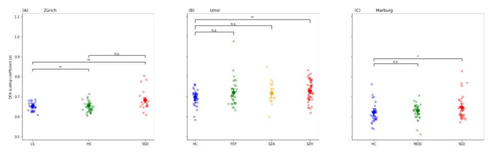
<figcaption class="paper-figure-caption"><b>Fig 1.</b> Figure 1. DFA scaling exponents (α) across diagnostic groups in the Zürich (A), Izmir (B), and</figcaption>
</figure>
<figure class="paper-figure-card">
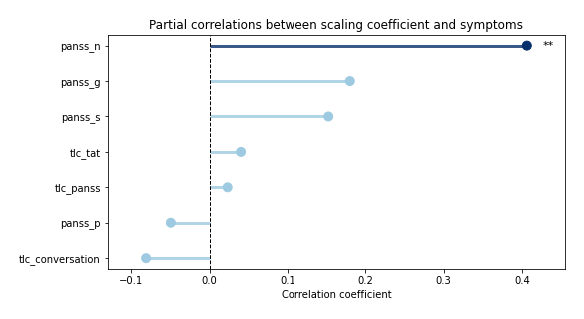
<figcaption class="paper-figure-caption"><b>Fig 2.</b> Figure 2: Partial Spearman correlations between DFA scaling exponents (α) and symptom scores in the Zürich dataset, controlling for diagnosis. Each point represents the correlation coefficient for a given symptom subscale, sorted by effect size. Dark blue indicates significance after FDR correction (q &lt; .05), medium blue indicates uncorrected significance (p &lt; .05), and light blue indicates non-significant associations. Dashed vertical line is at zero. *p &lt; .05 (uncorrected); **q &lt; .05 (FDR-corrected). Marburg dataset Symptom correlations are displayed in Figure 3.</figcaption>
</figure>
<figure class="paper-figure-card">
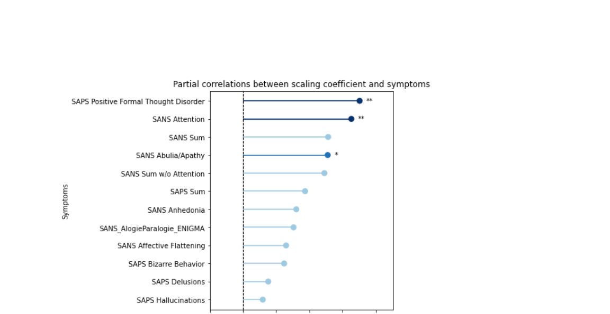
<figcaption class="paper-figure-caption"><b>Fig 3.</b> Figure 3: Partial Spearman correlations between DFA scaling exponents (α) and symptom scores in the Marburg dataset, controlling for diagnosis. Each point represents the correlation coefficient for a given symptom subscale, sorted by effect size. Dark blue indicates significance after FDR correction (q &lt; .05), medium blue indicates uncorrected significance (p &lt; .05), and light blue indicates non-significant associations. Dashed vertical line is at zero. *p &lt; .05 (uncorrected); **q &lt; .05 (FDR-corrected). Turkish dataset</figcaption>
</figure>
<figure class="paper-figure-card">
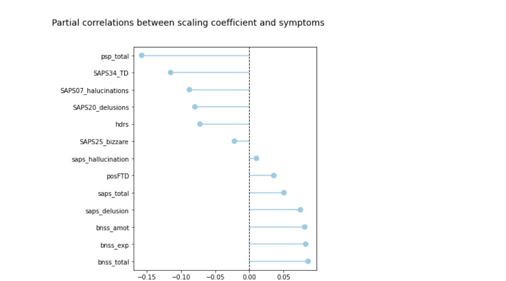
<figcaption class="paper-figure-caption"><b>Fig 4.</b> Figure 4: Partial Spearman correlations between DFA scaling exponents (α) and symptom scores in the Turkish dataset, controlling for diagnosis. Each point represents the correlation coefficient for a given symptom subscale, sorted by effect size. Dark blue indicates significance after FDR correction (q &lt; .05**), medium blue indicates uncorrected significance (p &lt; .05*), and light blue indicates non-significant associations. Dashed vertical line is at zero. *p &lt; .05 (uncorrected); **q &lt; .05 (FDR-corrected).</figcaption>
</figure>
</div>

<p><strong>Summary.</strong> This paper analyzes speech from psychosis patients by quantifying the temporal organization of semantic meaning using Detrended Fluctuation Analysis (DFA) on word embedding similarities. The authors found that patients exhibit abnormally high scaling exponents, suggesting excessive persistence and a departure from optimal 'critical' dynamics. This links linguistic pathology to known deviations from criticality observed in other complex physical systems.</p>
<p><strong>Why it may be interesting.</strong> Although applied to linguistics, the methodology—using DFA to test for deviations from critical scaling ($\alpha$) in a complex temporal process—is directly relevant to characterizing non-equilibrium dynamics in open quantum systems or biological processes modeled by statistical physics.</p>
<details>
<summary>Detailed structure</summary>
<p><strong>Main problem.</strong> The study investigates whether deviations from a scale-invariant 'pink noise' regime characterize the temporal organization of semantic relations in psychosis, drawing parallels with pathology seen in other complex systems.</p>
<p><strong>Main result.</strong> Patients exhibited significantly elevated DFA scaling exponents ($\alpha$) compared to controls, indicating abnormally strong and excessive long-range temporal correlations in their semantic fluctuations.</p>
<p><strong>Method.</strong> Detrended Fluctuation Analysis (DFA) was applied to continuous cosine-similarity time series derived from BERT embeddings of clinical speech transcripts.</p>
<p><strong>Model / system.</strong> The system analyzed is the temporal evolution of semantic relationships within human language production, modeled as trajectories through a high-dimensional semantic space using word embeddings.</p>
<p><strong>Key observables.</strong> DFA scaling exponent ($\alpha$), which quantifies long-range temporal correlations; cosine similarity time series.</p>
<p><strong>Important parameters / regimes.</strong> The critical regime (associated with pink noise/scale-invariance); the threshold for excessive persistence ($\alpha > 0.5$); minimum continuous stretch length (&gt;100 words).</p>
<p><strong>Assumptions / limitations.</strong> That deviations from criticality in language dynamics mirror pathological departures observed in physiological or neural systems; that DFA is an appropriate tool to characterize multi-timescale organization of meaning.</p>
<p><strong>Figures summary.</strong> Figure 1 shows DFA scaling exponents ($\alpha$) across diagnostic groups (Zürich, Izmir, Marburg datasets); subsequent figures show partial Spearman correlations between $\alpha$ and symptom scores for different cohorts.</p>
<p><strong>Paper structure.</strong> The paper establishes the theoretical framework by comparing noise regimes in pathology. It then details the application of DFA to semantic similarity time series from multiple clinical datasets (Zürich, Izmir, Marburg), presenting group comparisons and correlation analyses with symptom severity.</p>
</details>
<details>
<summary>Abstract</summary>
<p>The notion of pink noise refers to 'scale-invariant' temporal dynamics, where fluctuations exhibit similar statistical structure across time scales. Departures from a regime associated with such scale-free organization toward uncorrelated 'white' noise or overly persistent 'brown' noise have been widely identified as markers of pathology across physiological and cognitive domains. Whether comparable alterations characterize the temporal organization of language remains largely unexplored. We address this question in the domain of psychosis, where language anomalies are pervasively documented. Specifically, we apply detrended fluctuation analysis (DFA) to quantify temporal scaling in BERT-derived continuous cosine-similarity time series capturing trajectories through semantic space, using clinical transcripts from patients and controls across three independent datasets. DFA scaling exponents were extracted to characterize the strength of long-range temporal correlations. Across all datasets, patients exhibited significantly elevated scaling exponents relative to controls, indicating abnormally strong long-range correlations with excessive persistence in semantic fluctuations. This temporal analysis opens a window into the multi-timescale organization of meaning as it unfolds in discourse. The results reveal a signature of altered temporal scaling in speech, consistent with deviations from criticality in physiological domains, paralleling known departures from criticality in brain function in psychosis and suggesting possible links between these two domains.</p>
</details>
<p><sub><a href="#top">↑ back to top</a></sub></p>

<p><a id="paper-2606.21849"></a></p>
<h3 id="dynamical-tipping-in-a-quantum-limit-cycle"><a href="http://arxiv.org/abs/2606.21849v1">Dynamical Tipping in a Quantum Limit Cycle</a></h3>
<p><strong>Authors:</strong> Ya-Xin Xiang, Zhengyang Bai, Yu-Qiang Ma<br>
<strong>Type:</strong> theory · <strong>Category:</strong> statistical mechanics · <strong>PDF:</strong> <a href="https://arxiv.org/pdf/2606.21849v1">https://arxiv.org/pdf/2606.21849v1</a><br>
<strong>Analysis basis:</strong> full PDF text, analyzed in chunks
<strong>Topic relevance:</strong> 🔥 <code>driven-dissipative phase transition</code> <strong>4/5</strong> · <code>methods for driven-dissipative</code> <strong>3/5</strong> · <code>non-equilibrium dynamics</code> <strong>3/5</strong> · <code>non-equilibrium universality</code> <strong>3/5</strong> · <code>Keldysh / 2PI / non-Gaussian methods</code> <strong>1/5</strong> · <code>analog quantum simulation</code> <strong>1/5</strong> · <code>correlated / nonlocal dissipation</code> <strong>1/5</strong></p>
<div class="figure-strip-hint">↔ Scroll figures horizontally</div>
<div class="paper-figures-scroll">
<figure class="paper-figure-card">
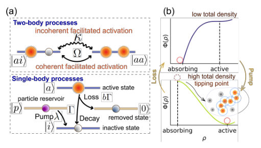
<figcaption class="paper-figure-caption"><b>Fig 1.</b> FIG. 1. (a) Effective four-level scheme with timescale separa- tion (Γ, κ, Ω≫bΓ, λ). An inactive quantum emitter (state |i⟩, gray sphere) can be activated via coherent (Ω) and incoher- ent (κ) facilitated activation by a nearby emitter in the active state |a⟩(red sphere). Active emitters spontaneously decay either back to |i⟩or into a removed state |0⟩(blue sphere), causing emitter loss. Emitters in the pump state |p⟩(purple sphere) are incoherently transferred to the inactive state to compensate for losses. The system exhibits a first-order APT from a zero-excitation absorbing state to a finite-excitation active state as the total density increases. This is captured by (b) the effective...</figcaption>
</figure>
<figure class="paper-figure-card">
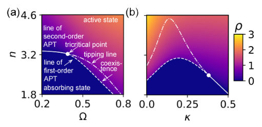
<figcaption class="paper-figure-caption"><b>Fig 2.</b> FIG. 2. Mean-field (MF) phase diagrams for (a) κ = 0.3 and (b) Ω= 0.5 at fixed total density n. Color indicates the ac- tive density ρ. In the classical (quantum) regime, the system exhibits a second-order (first-order) APT from the absorbing with ρ = 0 to an active state with finite ρ, marked by solid (dashed) lines. The two transitions meet at a tricritical point (dot). Within the first-order APT regime, the tipping point (dash-dotted lines) marks where the absorbing state becomes linearly unstable (u2 = 0). The region between the tipping line and the first-order APT line is a coexistence regime where the absorbing and active states are both stable.</figcaption>
</figure>
<figure class="paper-figure-card">
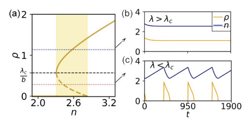
<figcaption class="paper-figure-caption"><b>Fig 3.</b> FIG. 3. MF picture of limit cycle state induced by self- organized bistability. (a) For a given loading rate λ, the stationary solution to the coupled equations (7a) and (7b) corresponds to the intersection between the yellow curve (fixed points of the active-density equation (7b) at fixed to- tal density; solid/dashed segments indicate stable/unstable branches) and the horizontal dashed line (fixed point of total- density equation (7b)). The coexistence regime is shaded yel- low. A critical loading rate λc separate two regimes: (b) limit- cycle state for λ &lt; λc and (c) stationary state for λ &gt; λc.</figcaption>
</figure>
<figure class="paper-figure-card">
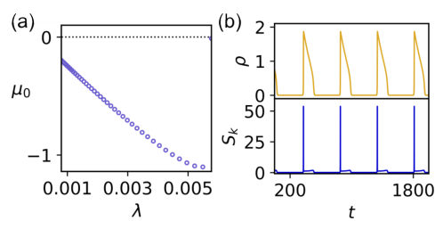
<figcaption class="paper-figure-caption"><b>Fig 4.</b> FIG. 4. (a) Floquet multiplier that corresponds to fluctua- tions of active density fields with respect to MF trajectory as a function of λ for k = 0. (b) The dynamical behav- ior of the active density (upper) and correlation function (lower) Sk = ⟨δρk,tδρ−k,t⟩within Gaussian approximation for k = 0.1π. In line with a negative Floquet multiplier in (a), the correlation function Sk is periodic and finite with peaks corresponding to the tipping point where the system is about to jump from the absorbing state towards the absorbing state and is therefore susceptible to fluctuations.</figcaption>
</figure>
<figure class="paper-figure-card">
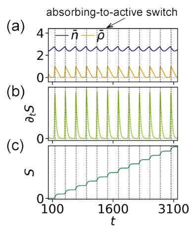
<figcaption class="paper-figure-caption"><b>Fig 5.</b> FIG. 5. Time series of (a) the spatially averaged total ¯n and active ¯ρ densities, (b) instantaneous entropy production rate ∂tS, and (c) total entropy production S. Gray dashed lines mark transitions from the absorbing to the active state. The instantaneous entropy production rate peaks at the tipping point where the system switches from the absorbing to active states. Parameters for (a)-(c) are L = 64, λ = 3.2 × 10−3.</figcaption>
</figure>
</div>

<p><strong>Summary.</strong> The paper develops a theoretical model for open quantum systems exhibiting bistability driven by first-order phase transitions. It shows that these systems can sustain stable Limit Cycles characterized by periodic fluctuations. These LCs are robustly linked to the system's tipping points, which manifest as sharp spikes in dynamical susceptibility and energy dissipation.</p>
<p><strong>Why it may be interesting.</strong> This work provides a rigorous quantum mechanical framework for understanding how far-from-equilibrium processes—like those seen in climate or ecology—can generate sustained, coherent oscillations (LCs) using fundamental concepts of critical slowing down and dissipation.</p>
<details>
<summary>Detailed structure</summary>
<p><strong>Main problem.</strong> The study investigates how non-equilibrium fluctuations and long-range correlations can be sustained by engineering a quantum limit cycle in systems undergoing first-order absorbing-state phase transitions.</p>
<p><strong>Main result.</strong> The authors demonstrate that stable Limit Cycles (LCs) emerge from the interplay between bistability, multiplicative quantum noise, and periodic passage through tipping points, which are marked by sharp spikes in dynamical susceptibility and entropy production.</p>
<p><strong>Method.</strong> The analysis employs a combination of Lindblad master equations, semiclassical continuum approximations leading to coupled Langevin equations, Floquet analysis for stability, and path integral methods for calculating entropy production.</p>
<p><strong>Model / system.</strong> The model is a generic quantum contact system involving active and inactive emitters, exhibiting bistability. Dynamics are governed by coupled stochastic differential equations derived from the master equation, describing the evolution of active ($
ho$) and total ($n$) densities.</p>
<p><strong>Key observables.</strong> Dynamical susceptibility (showing transient spikes), energy dissipation rate/dynamical entropy production (showing stepwise accumulation), and spatial correlation functions $S_{k,t}$.</p>
<p><strong>Important parameters / regimes.</strong> System rates ($\Gamma, \kappa, \lambda, b$), noise characteristics, and the control parameter $\lambda$ which dictates the transition between stationary states and LC regimes.</p>
<p><strong>Assumptions / limitations.</strong> The analysis relies on semiclassical continuum limits, Markovian noise assumptions, and linearization techniques (e.g., around mean-field trajectories) to analyze fluctuations.</p>
<p><strong>Figures summary.</strong> Figures illustrate Mean-Field phase diagrams showing APTs; time series show periodic oscillations of correlations ($S_{k,t}$) peaking near the tipping point; and entropy production ($\partial t S$) shows a sharp peak coinciding with the transition.</p>
<p><strong>Paper structure.</strong> The paper progresses from defining the physical system via master equations to deriving effective classical/stochastic dynamics. It then analyzes phase transitions (APT) using mean-field theory, followed by linearizing fluctuations around the trajectory and applying Floquet analysis to confirm LC stability and characterize correlation peaks linked to thermodynamic signatures like entropy production.</p>
</details>
<details>
<summary>Abstract</summary>
<p>Nonequilibrium systems maintain spatiotemporal order through energy dissipation and entropy production. Here, we demonstrate this principle by engineering a quantum limit cycle that emerges from the interplay between a first-order absorbing-state phase transition and feedback mechanism coupling order and control parameters. The quantum limit cycle manifests dynamical correlations driven by multiplicative quantum noise and periodic traverses through tipping points, which act as a robust early-warning signal for state transitions. This periodic crossing results in the enhanced dynamical susceptibility and transient rise of long-range correlations near each tipping event and their subsequent disappearance away from it. These critical transitions are accompanied by a sharp increase in the energy dissipation rate, leading to a stepwise accumulation of dynamical entropy production over time. Our results provide a way for realizing dynamical fluctuations and long-range correlations in strongly interacting driven-dissipative open quantum systems.</p>
</details>
<p><sub><a href="#top">↑ back to top</a></sub></p>

<p><a id="paper-2606.23684"></a></p>
<h3 id="emergent-andreev-reflection-from-a-lattice-duality-defect"><a href="http://arxiv.org/abs/2606.23684v1">Emergent Andreev Reflection from a Lattice Duality Defect</a></h3>
<p><strong>Authors:</strong> Atsushi Ueda, Tokiro Numasawa, Boris De Vos, Masataka Watanabe<br>
<strong>Type:</strong> theory · <strong>Category:</strong> other · <strong>PDF:</strong> <a href="https://arxiv.org/pdf/2606.23684v1">https://arxiv.org/pdf/2606.23684v1</a><br>
<strong>Analysis basis:</strong> full PDF text, analyzed in chunks
<strong>Topic relevance:</strong> 🔥 <code>Kondo &amp; dissipative impurity</code> <strong>4/5</strong> · <code>Keldysh / 2PI / non-Gaussian methods</code> <strong>2/5</strong> · <code>analog quantum simulation</code> <strong>2/5</strong> · <code>driven-dissipative phase transition</code> <strong>2/5</strong> · <code>Frenkel-Kontorova</code> <strong>1/5</strong> · <code>correlated / nonlocal dissipation</code> <strong>1/5</strong> · <code>entanglement &amp; information structure</code> <strong>1/5</strong> · <code>methods for driven-dissipative</code> <strong>1/5</strong> · <code>non-equilibrium dynamics</code> <strong>1/5</strong> · <code>non-equilibrium universality</code> <strong>1/5</strong></p>
<div class="figure-strip-hint">↔ Scroll figures horizontally</div>
<div class="paper-figures-scroll">
<figure class="paper-figure-card">
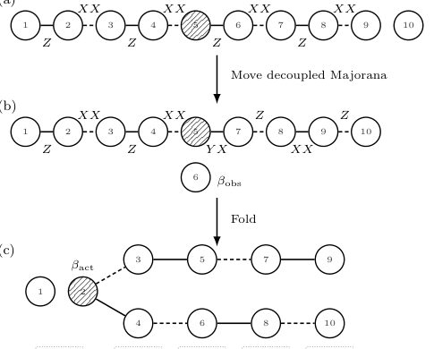
<figcaption class="paper-figure-caption"><b>Fig 1.</b> FIG. 1. Three representations of the same physical theory. A pair of adjacent Majorana fermions defines a local Hilbert space. (a) The original transverse-field Ising chain. Solid and dashed lines denote couplings of alternating strength. (b) The same model after sliding the decoupled Majorana fermion βobs. βobs forms a pair with the fifth Majorana (which we call the active Majorana, shaded in grey) for spanning the Hilbert space. (c) The folded representation of the impurity Ising chain.</figcaption>
</figure>
<figure class="paper-figure-card">
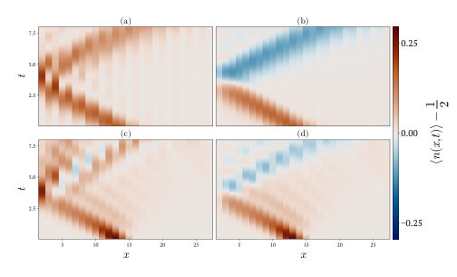
<figcaption class="paper-figure-caption"><b>Fig 2.</b> FIG. 2. Scattering dynamics for the free boundary condition in (a,c) and the Emery–Kivelson (EK) boundary condition in (b,d), at g = 1 in (a,b) and g = 3 in (c,d). The wave packet is created by applying a fermion creation operator to the ground state which propagates toward the boundary at x = 1, where it is reflected. For the free boundary condition in (a,c), the charge of the excitation is preserved upon reflection. For the EK boundary condition in (b,d), the charge is flipped.</figcaption>
</figure>
<figure class="paper-figure-card">
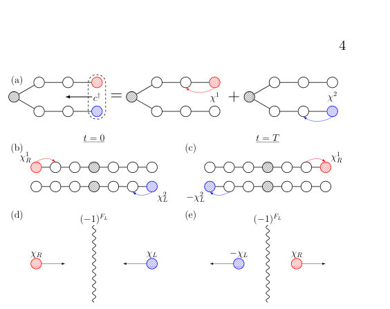
<figcaption class="paper-figure-caption"><b>Fig 3.</b> FIG. 3. Andreev reflection in the lattice EK model. (a) Before unfolding, a wavepacket of the complex fermion approach- ing the boundary decomposes into a pair of chiral Majorana fermions hopping in the same direction. (b) After unfolding, the pair of chiral Majorana fermions move in opposite direc- tions towards the impurity. (c) The boundary Majorana im- purity implements a one-site translation, producing a minus sign only for the left-moving mode. (d,e) Continuum coun- terpart of the same process. The Majorana impurity acts as a chiral fermion-parity defect.</figcaption>
</figure>
<figure class="paper-figure-card">
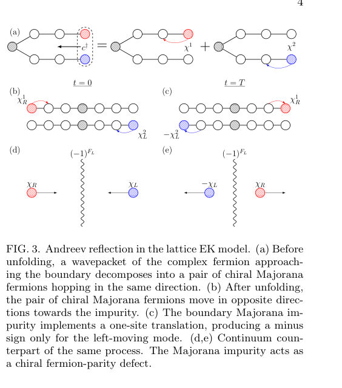
<figcaption class="paper-figure-caption"><b>Fig 4.</b> Fig. 3 (d,e). Combining these two facts, the lattice re- alization of the Emery–Kivelson boundary condition is naturally identified with the one-site translation defect in the staggered Majorana fermion model. This identifi- cation is not an exact microscopic equality on the lattice; it is an emergent low-energy statement. This is why we call the phenomenon emergent Andreev reflection. Relation to interfaces between CFTs and SPT phases. Let us finally make explicit the relation between the lat- tice Emery–Kivelson model and an interface between a gapless chain and an SPT phase. Strictly speaking, on the lattice we consider an interface between a gapped SPT segment and a gapless Majorana...</figcaption>
</figure>
<figure class="paper-figure-card">
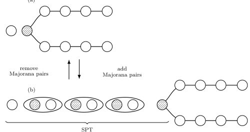
<figcaption class="paper-figure-caption"><b>Fig 5.</b> FIG. 4. Relation between the Emery–Kivelson boundary and an interface between a Kitaev-chain SPT segment and gapless Majorana chains. (a) The lattice Emery–Kivelson boundary described by Eq. (6). (b) An interface between a Kitaev- chain SPT segment and gapless Majorana chains described by Eq. (11). The lattice Emery–Kivelson boundary can be viewed as the minimal boundary limit of this SPT-gapless interface, in which only the interface Majorana mode remains coupled to the gapless chains.</figcaption>
</figure>
</div>

<p><strong>Summary.</strong> The paper reveals that Andreev reflection, typically associated with superconducting interfaces, can emerge microscopically in a purely lattice system by introducing a duality defect into the transverse-field Ising chain. This mechanism is mathematically equivalent to a specific one-site translation of Majorana fermions, providing a unified theoretical framework for understanding boundary physics across different quantum impurity models.</p>
<p><strong>Why it may be interesting.</strong> This work provides a deep microscopic understanding of topological boundary phenomena, linking concepts from condensed matter (Kitaev chains, SPT phases) to fundamental quantum impurity physics (Kondo effect) via lattice symmetries and defects.</p>
<details>
<summary>Detailed structure</summary>
<p><strong>Main problem.</strong> The study aims to determine the universal mechanism behind Andreev reflection (a charge-conjugating boundary condition) when it appears in seemingly unrelated quantum impurity problems, such as those related to the two-channel Kondo effect.</p>
<p><strong>Main result.</strong> Andreev reflection is shown to emerge naturally from a purely lattice duality defect—specifically, it corresponds to a one-site translation of Majorana operators within the folded transverse-field Ising chain model.</p>
<p><strong>Method.</strong> The authors use theoretical mapping techniques, transforming the Ising Hamiltonian into a Majorana representation and analyzing scattering dynamics by 'folding' the system at an impurity site.</p>
<p><strong>Model / system.</strong> The primary model is based on the transverse-field Ising chain, which is analyzed via its Majorana fermion formulation. The defect introduces an effective boundary condition analogous to those found in the Emery–Kivelson (EK) model or at interfaces between Kitaev-chain SPT phases and gapless chains.</p>
<p><strong>Key observables.</strong> Scattering dynamics of wavepackets, charge fluctuation ($\delta n(x)$), comparison between free vs. EK boundary conditions, and conservation laws for axial $U(1)_A$ symmetry.</p>
<p><strong>Important parameters / regimes.</strong> The system is analyzed in the continuum limit and at the interface between a Kitaev-chain SPT phase and gapless chains; the two-channel Kondo problem serves as a key physical realization.</p>
<p><strong>Assumptions / limitations.</strong> The identification of Andreev reflection with a one-site translation defect is termed 'emergent' because it is not an exact microscopic equality on the lattice, but rather a low-energy statement.</p>
<p><strong>Figures summary.</strong> Figures illustrate the mapping from the Ising chain to the folded geometry, comparing scattering results for free vs. EK boundaries, and showing the physical realization of Andreev reflection via Majorana impurity defects acting as chiral fermion-parity defects.</p>
<p><strong>Paper structure.</strong> The paper proceeds by establishing the lattice model (Ising $  o$ Majorana), analyzing the boundary defect structure through folding, deriving the continuum limit connection to Dirac fermions, and finally connecting this mechanism to known physical boundaries like those in the two-channel Kondo problem.</p>
</details>
<details>
<summary>Abstract</summary>
<p>Andreev reflection converts an incoming fermion into an outgoing hole and is usually tied to a superconducting interface. We show that an analogous charge-conjugating boundary condition emerges from a purely lattice duality defect. Starting from a Majorana representation of the transverse-field Ising chain, we construct a folded lattice model in which a boundary Majorana impurity implements a one-site translation of a staggered Majorana chain. In the continuum, this translation becomes a chiral fermion-parity defect: it flips the sign of the only left-moving Majorana mode while leaving the right-moving mode unchanged. When the two Majorana modes are recombined into a complex fermion in the folded geometry, this sign flip becomes the Andreev-like boundary condition. Our lattice formulation gives a microscopic interpretation of the Emery--Kivelson boundary of the two-channel Kondo problem and of Maldacena--Ludwig monopole scattering, while identifying the boundary as the interface between a Kitaev-chain SPT phase and a gapless chain. The same Majorana translation defect also provides a lattice realization of an axial $U(1)_A$-symmetric charge-flip boundary.</p>
</details>
<p><sub><a href="#top">↑ back to top</a></sub></p>

<p><a id="paper-2606.22209"></a></p>
<h3 id="giant-fluctuations-in-self-propelled-particles-with-age-dependent-switching"><a href="http://arxiv.org/abs/2606.22209v1">Giant Fluctuations in Self-Propelled Particles with Age-Dependent Switching</a></h3>
<p><strong>Authors:</strong> Shabnam Sohrabi, Farhad H. Jafarpour<br>
<strong>Type:</strong> theory · <strong>Category:</strong> statistical mechanics · <strong>PDF:</strong> <a href="https://arxiv.org/pdf/2606.22209v1">https://arxiv.org/pdf/2606.22209v1</a><br>
<strong>Analysis basis:</strong> full PDF text, analyzed in chunks
<strong>Topic relevance:</strong> 🔥 <code>non-equilibrium universality</code> <strong>4/5</strong> · <code>driven-dissipative phase transition</code> <strong>3/5</strong> · <code>methods for driven-dissipative</code> <strong>3/5</strong> · <code>non-equilibrium dynamics</code> <strong>3/5</strong> · <code>Frenkel-Kontorova</code> <strong>1/5</strong> · <code>Keldysh / 2PI / non-Gaussian methods</code> <strong>1/5</strong> · <code>correlated / nonlocal dissipation</code> <strong>1/5</strong></p>
<div class="figure-strip-hint">↔ Scroll figures horizontally</div>
<div class="paper-figures-scroll">
<figure class="paper-figure-card">
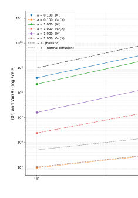
<figcaption class="paper-figure-caption"><b>Fig 1.</b> Figure 1: Scaling of the second moment ⟨x2 T ⟩(solid symbols) and variance Var(xT ) (open symbols) for a broad range of the exponent a. In the sub- critical (a = 0.100) and supercritical (a = 1.900) regimes, the variance follows the ordinary diffusive scaling ∼T (dotted line). At the critical point a = 1.000, the variance exhibits a marked departure from normal diffusion, growing nearly ballistically.</figcaption>
</figure>
<figure class="paper-figure-card">
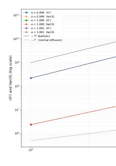
<figcaption class="paper-figure-caption"><b>Fig 2.</b> Figure 2: Detailed view of the scaling behavior in the vicinity of the critical point a = 1. The variance for a = 1.000 (red squares) clearly deviates from the diffusive ∼T scaling and exhibits a near-ballistic growth that is systematically weaker than ∼T 2, in agreement with the marginal prediction derived in Section 6. For small deviations from criticality (a = 0.999 and a = 1.001), the variance remains practically indistinguishable from the a = 1 curve over the entire simulated time window, reflecting the extremely slow crossover away from the marginal scaling.</figcaption>
</figure>
</div>

<p><strong>Summary.</strong> This theoretical paper analyzes the random walk behavior of self-propelled particles undergoing age-dependent phase switching. By using advanced generating function techniques, the authors characterize how fluctuations deviate from normal diffusion across different parameter regimes. The key finding is the emergence of giant, anomalous fluctuations at a critical point, demonstrating non-trivial memory effects in biased active matter systems.</p>
<p><strong>Why it may be interesting.</strong> The concept of anomalous diffusion arising from memory effects (age-dependent switching) is highly relevant to non-equilibrium dynamics, which shares mathematical structures with open quantum systems where dissipation or environmental coupling introduces complex time correlations.</p>
<details>
<summary>Detailed structure</summary>
<p><strong>Main problem.</strong> The study investigates the transport and fluctuation properties of self-propelled particles whose motion is governed by a complex, age-dependent phase-switching mechanism.</p>
<p><strong>Main result.</strong> The system exhibits giant fluctuations at the critical point ($a=1$), where the variance scales anomalously as $ ext{Var}(x_T) \propto T^2 / \log T$, indicating a marginal breakdown of the Central Limit Theorem.</p>
<p><strong>Method.</strong> The analysis employs generating-function methods and discrete-time moment recurrences, utilizing spatial Fourier and temporal z-transforms to derive exact expressions for the propagator and its asymptotic moments.</p>
<p><strong>Model / system.</strong> The model describes a particle switching between two phases: a memoryless downstream phase ($\sigma_t = +1$) and an upstream phase ($\sigma_t = -1$) whose switching probability depends on the age $c$ via a hazard function $a/(b+c)$.</p>
<p><strong>Key observables.</strong> Mean displacement $\langle x_T 
angle$, variance $  ext{Var}(x_T)$, and the total propagator $  ilde{P}(k, z)$.</p>
<p><strong>Important parameters / regimes.</strong> The critical exponent $a$ (governing age-dependence), and system parameters $r, a, b, p$. Regimes include subcritical ($a<1$), critical ($a=1$), and supercritical ($a>1$).</p>
<p><strong>Assumptions / limitations.</strong> The analysis relies on deriving exact expressions for propagators and moments using generating functions, assuming power-law decay of survival probabilities $S(c) \sim c^{-a}$ for large $c$.</p>
<p><strong>Figures summary.</strong> Figures illustrate the scaling of $\langle x^2_T 
angle$ and $    ext{Var}(x_T)$ across different regimes of $a$, confirming ballistic growth in $\langle x^2_T 
angle$ and showing the anomalous $  ext{Var}(x_T) \sim T^{2/\log T}$ scaling at $a=1$.</p>
<p><strong>Paper structure.</strong> The paper establishes the master equations for the two-phase motion, applies generating function techniques to find the propagator in $(k, z)$ space, and then analyzes the asymptotic behavior of the moments ($\langle x_T 
angle$ and $   ext{Var}(x_T)$) based on the critical exponent $a$.</p>
</details>
<details>
<summary>Abstract</summary>
<p>We investigate the transport and fluctuation properties of self-propelled particles whose motion is governed by an age-dependent phase-switching mechanism. The dynamics alternate between a Markovian downstream phase with a constant switching probability $r$ and a semi-Markovian upstream phase in which the age-dependent hazard probability $a/(b+c)$ decays with the internal clock $c$, representing persistent orientation. The time-averaged velocity, as an order parameter, shows a continuous transition at $a=1$ which separates an upstream-dominated ballistic regime ($a<1$) from an ergodic diffusive regime ($a>1$). Through generating-function methods and discrete-time moment recurrences, we derive exact expressions for the propagator and determine the long-time asymptotics of the mean displacement and variance. At the critical point $a=1$, the system exhibits giant fluctuations, with the variance scaling ballistically up to a logarithmic correction, $\mathrm{Var}(x_T) \propto T^2 / \log T$. These results demonstrate how slowly decaying reorientation probabilities lead to a marginal breakdown of the Central Limit Theorem, enabling unusually high-variance exploratory dynamics in biased environments.</p>
</details>
<p><sub><a href="#top">↑ back to top</a></sub></p>

<p><a id="paper-2606.23652"></a></p>
<h3 id="robust-structure-learning-of-math241math-local-lindbladians"><a href="http://arxiv.org/abs/2606.23652v1">Robust Structure Learning of $k$-local Lindbladians</a></h3>
<p><strong>Authors:</strong> Tim Möbus, Thiago Bergamaschi, Daniel Stilck França, Cambyse Rouzé<br>
<strong>Type:</strong> theory · <strong>Category:</strong> quantum information and computing · <strong>PDF:</strong> <a href="https://arxiv.org/pdf/2606.23652v1">https://arxiv.org/pdf/2606.23652v1</a><br>
<strong>Analysis basis:</strong> full PDF text, analyzed in chunks
<strong>Topic relevance:</strong> 🔥 <code>methods for driven-dissipative</code> <strong>4/5</strong> · <code>correlated / nonlocal dissipation</code> <strong>3/5</strong> · <code>driven-dissipative phase transition</code> <strong>2/5</strong> · <code>non-equilibrium dynamics</code> <strong>2/5</strong> · <code>quantum measurements</code> <strong>2/5</strong> · <code>Keldysh / 2PI / non-Gaussian methods</code> <strong>1/5</strong> · <code>non-equilibrium universality</code> <strong>1/5</strong></p>
<div class="figure-strip-hint">↔ Scroll figures horizontally</div>
<div class="paper-figures-scroll">
<figure class="paper-figure-card">
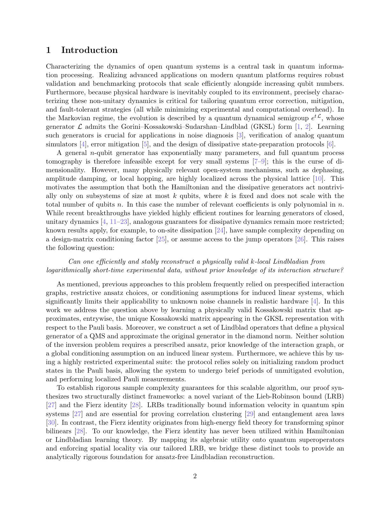
<figcaption class="paper-figure-caption"><b>Fig 1.</b> Low-resolution page preview, page 2</figcaption>
</figure>
<figure class="paper-figure-card">
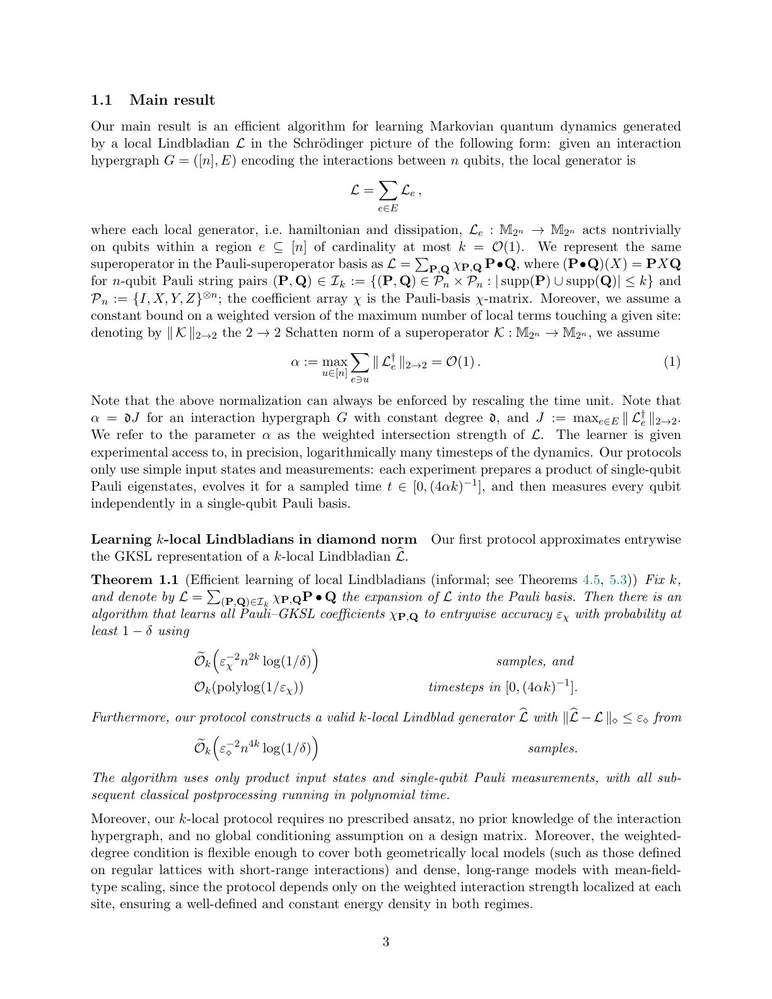
<figcaption class="paper-figure-caption"><b>Fig 2.</b> Low-resolution page preview, page 3</figcaption>
</figure>
<figure class="paper-figure-card">
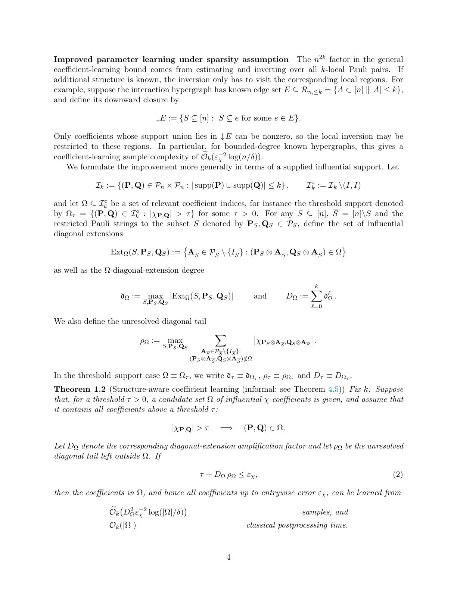
<figcaption class="paper-figure-caption"><b>Fig 3.</b> Low-resolution page preview, page 4</figcaption>
</figure>
<figure class="paper-figure-card">
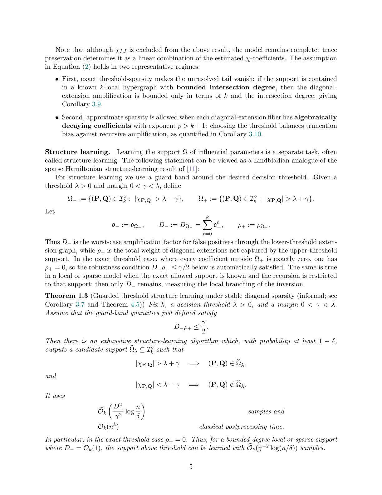
<figcaption class="paper-figure-caption"><b>Fig 4.</b> Low-resolution page preview, page 5</figcaption>
</figure>
<figure class="paper-figure-card">
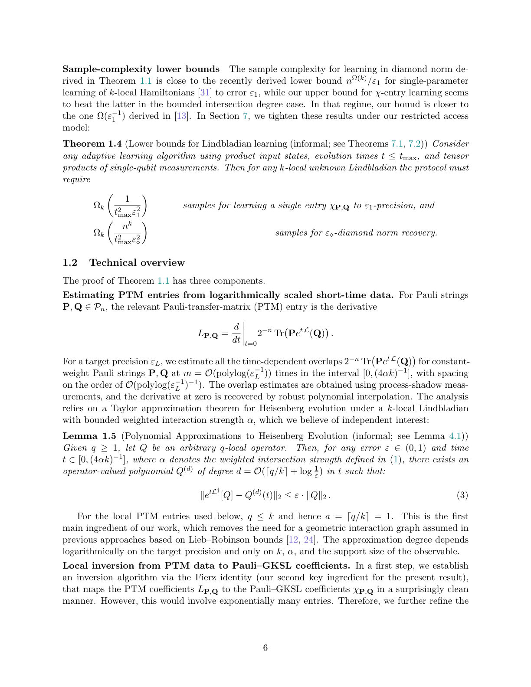
<figcaption class="paper-figure-caption"><b>Fig 5.</b> Low-resolution page preview, page 6</figcaption>
</figure>
</div>

<p><strong>Summary.</strong> This paper presents novel, efficient protocols for learning the generator of open quantum system dynamics (Lindbladians) using only limited measurements like product-state preparations. By combining advanced techniques such as Semidefinite Programming with structural assumptions on interactions, it achieves rigorous sample complexity guarantees that scale favorably with system size $n$ when the underlying physics is sparse or local.</p>
<p><strong>Why it may be interesting.</strong> This work is highly relevant as it provides the theoretical tools necessary to characterize complex quantum dynamics in realistic settings where full tomography is impossible. The focus on $k$-locality and sparsity directly addresses resource limitations inherent in experimental quantum physics.</p>
<details>
<summary>Detailed structure</summary>
<p><strong>Main problem.</strong> The core problem is developing efficient, data-driven protocols to reconstruct an unknown $k$-local Lindbladian generator ($\mathcal{L}$) governing open quantum system dynamics.</p>
<p><strong>Main result.</strong> The authors provide sample complexity bounds for learning the coefficients of $\mathcal{L}$ using limited measurements, achieving significant improvements when exploiting sparsity assumptions. They also establish lower bounds proving the necessity of these sample complexities.</p>
<p><strong>Method.</strong> The methodology combines techniques from quantum process tomography (using product-state preparations and short-time evolution) with advanced mathematical tools like Semidefinite Programming (SDP) to project noisy estimates onto the space of physically valid Lindblad generators.</p>
<p><strong>Model / system.</strong> The system is an open quantum system of $n$ qubits evolving under a Markovian master equation, $rac{d}{dt}
ho(t) = \mathcal{L}(
ho(t))$. The generator $\mathcal{L}$ is assumed to be $k$-local, meaning interactions are confined to small subsets of qubits.</p>
<p><strong>Key observables.</strong> The primary observables are the Pauli-GKSL coefficients ($\chi_{P,Q}$) defining the Lindbladian structure, and the measured quantities are related to the Pauli Transfer Matrix (PTM) elements derived from short-time evolution.</p>
<p><strong>Important parameters / regimes.</strong> Key parameters include the accuracy $\epsilon$, failure probability $\delta$, locality $k$, system size $n$, and the weighted intersection strength $\alpha$ which bounds local interactions.</p>
<p><strong>Assumptions / limitations.</strong> The protocol assumes a constant bound on the interaction strength ($\alpha=O(1)$) for general learning, and relies heavily on exploiting sparsity structures (e.g., via supplied influential coefficients $\Omega$) to improve scaling from polynomial to logarithmic in $n$.</p>
<p><strong>Paper structure.</strong> The paper develops a multi-stage pipeline: first, estimating raw coefficients from measurements; second, using SDPs to project these estimates onto the space of valid Lindbladians; and finally, deriving rigorous sample complexity bounds (both upper bounds for the protocol and lower bounds proving their necessity) based on locality assumptions.</p>
</details>
<details>
<summary>Abstract</summary>
<p>We present an efficient protocol for learning an unknown $k$-local Lindblad generator on $n$ qubits using only product-state preparations, short-time evolution, and single-qubit Pauli measurements, without prior knowledge of the interaction structure. For fixed $k$ and bounded weighted interaction strength, the protocol estimates all Hamiltonian and dissipative Pauli--GKSL coefficients to entrywise accuracy $\varepsilon$ with probability at least $1-δ$ using $\widetilde{\mathcal O}_k(\varepsilon^{-2}n^{2k}\log(1/δ))$ samples and polylogarithmically many evolution times. A semidefinite projection converts these estimates into a valid $k$-local Lindblad generator with diamond-norm error at most $\varepsilon$ using $\widetilde{\mathcal O}_k(\varepsilon^{-2}n^{4k}\log(1/δ))$ samples and polynomial-time classical postprocessing. If a suitable set of influential coefficients is supplied and satisfies a stable sparsity condition, the dependence on $n$ can improve from polynomial to logarithmic; in particular, exact supports of bounded intersection degree require only $\widetilde{\mathcal O}_k(\varepsilon^{-2}\log(n/δ))$ samples, with analogous reductions in system-size dependence for sufficiently decaying long-range interactions. We also provide a robust structure-learning procedure, extend the guarantees to model misspecification, and prove complementary sample-complexity lower bounds. To our knowledge, these are the first efficient learning guarantees for general $k$-local dissipative quantum dynamics under such limited experimental control.</p>
</details>
<p><sub><a href="#top">↑ back to top</a></sub></p>

<p><a id="paper-2606.23528"></a></p>
<h3 id="a-dipolar-bose-bose-mixture-of-dysprosium-isotopes-with-controllable-interspecies-interactions"><a href="http://arxiv.org/abs/2606.23528v1">A dipolar Bose-Bose mixture of Dysprosium isotopes with controllable interspecies interactions</a></h3>
<p><strong>Authors:</strong> M. Duerbeck, L. Reihs, J. P. Marulanda-Serna, B. Choudhari, J. Seifert, N. Werum, G. Meijer, G. Valtolina<br>
<strong>Type:</strong> experiment · <strong>Category:</strong> quantum gases · <strong>PDF:</strong> <a href="https://arxiv.org/pdf/2606.23528v1">https://arxiv.org/pdf/2606.23528v1</a><br>
<strong>Analysis basis:</strong> full PDF text, analyzed in chunks
<strong>Topic relevance:</strong> 🔥 <code>analog quantum simulation</code> <strong>4/5</strong> · <code>non-equilibrium dynamics</code> <strong>3/5</strong> · <code>scars &amp; prethermalization</code> <strong>2/5</strong> · <code>correlated / nonlocal dissipation</code> <strong>1/5</strong> · <code>driven-dissipative phase transition</code> <strong>1/5</strong> · <code>entanglement &amp; information structure</code> <strong>1/5</strong> · <code>methods for driven-dissipative</code> <strong>1/5</strong> · <code>non-equilibrium universality</code> <strong>1/5</strong></p>
<div class="figure-strip-hint">↔ Scroll figures horizontally</div>
<div class="paper-figures-scroll">
<figure class="paper-figure-card">
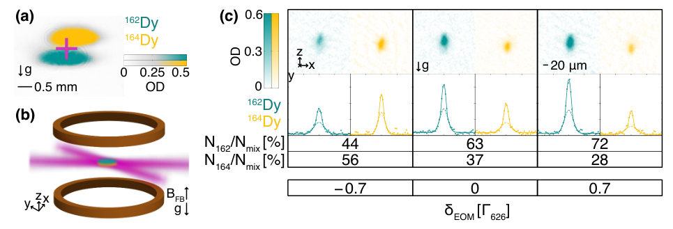
<figcaption class="paper-figure-caption"><b>Fig 1.</b> FIG. 1. (a) Absorption images of 162Dy and 164Dy in the DI-MOT at δEOM = −3.0 Γ626, with Γ626 being the natural linewidth of the 626-nm transition. The vertical displacement allows us to control the population imbalance in the crossed ODT, whose position is marked by a purple cross. (b) Sketch of the experimental apparatus showing the atoms being loaded from the DI-MOT into the crossed ODT. (c) Left: At negative detuning δEOM = −0.7 Γ626, the loading of 164Dy into the ODT is favored over 162Dy. Here, we realize a Bose-Einstein condensate (BEC) of 162Dy and 164Dy consisting of N162 = 1.4 · 104 and N164 = 1.8 · 104, with a condensed fraction of around 25% and 40% respectively. N162 and N164...</figcaption>
</figure>
<figure class="paper-figure-card">
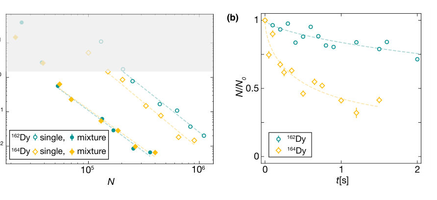
<figcaption class="paper-figure-caption"><b>Fig 2.</b> FIG. 2. Evaporative cooling trajectories for single-species and dual-species operation at a magnetic field of 9.7 G. (a) Peak PSD ρ0 as a function of atom number N during forced evaporation of 162Dy (green) and 164Dy (orange) in single-species (hollow) and mixture (solid) experiments. We extract γ as the slope of the respective linear fits (dashed lines). The gray band marks the threshold PSD for the onset of condensation (PSD ∼1). The near-identical slopes in the single-isotope and mixture configurations indicate that the interspecies interactions do not greatly affect the evaporation efficiency at a magnetic field of 9.7 G. b) Lifetime measurements of 162Dy BEC (τ162Dy = 14(1)s) and 164Dy...</figcaption>
</figure>
<figure class="paper-figure-card">
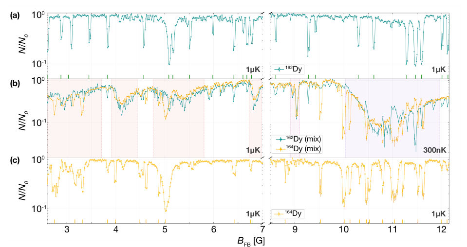
<figcaption class="paper-figure-caption"><b>Fig 3.</b> FIG. 3. Interspecies Feshbach resonances between 162Dy and 164Dy. (a) &amp; (c) show the single- isotope atom-loss spectra over 2.6-7 G and 8.5-12.1 G for 162Dy (green) and 164Dy (orange), recorded at 1 µK with a 1 s hold time. (b) shows the atom-loss spectra of the 162Dy-164Dy mixture over the same field range, recorded at 300 nK with a 500 ms hold time. Shaded regions highlight interspecies resonances. A broad resonance, extending from approximately 10.1 to 11.95 G, is centered at B0 = 10.8(3) G, offering the opportunity to easily control the interspecies scattering length a12 in the Bose-Bose mixture.</figcaption>
</figure>
<figure class="paper-figure-card">
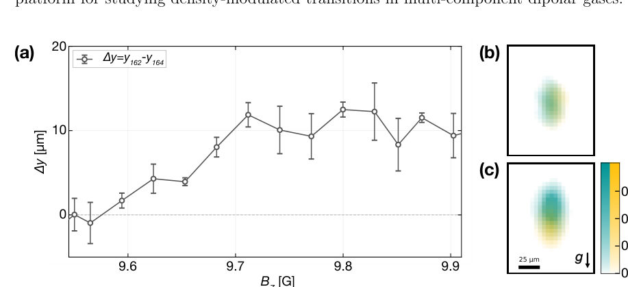
<figcaption class="paper-figure-caption"><b>Fig 4.</b> FIG. 4. Evidence of miscible-immiscible transition in a Dy miture. (a) Relative vertical displace- ment ∆y defined as ∆y = y162 −y164, where y162 and y164 are the centers of mass of the 162Dy and 164Dy BECs, respectively, after 20 ms time-of-flight expansion for different magnetic fields regions. (b) At a magnetic field of 9.58 G, the two clouds are overlapped, consistent with the miscible phase. (c)At a magnetic field of 9.675 G we move close to the resonance at 10.8(3) G, a12 increases and the two clouds repel each other, consistent with an immiscible phase, where 162Dy (green) sits on top of 164Dy (orange). Our analysis suggests that at BBEC the mixture is produced in the immiscible...</figcaption>
</figure>
</div>

<p><strong>Summary.</strong> The paper reports on creating and characterizing a quantum-degenerate Bose-Bose mixture of Dysprosium isotopes, which serves as a highly controllable platform for studying dipolar physics. By tuning interspecies interactions via Feshbach resonances, the researchers observed evidence of a transition between miscible and immiscible phases in the condensate cloud. This work advances the understanding of complex many-body dynamics in dipolar quantum gases.</p>
<p><strong>Why it may be interesting.</strong> This research directly addresses advanced many-body physics in ultracold atomic systems by incorporating long-range dipolar interactions and exploring complex phase transitions like supersolidity and immiscibility.</p>
<details>
<summary>Detailed structure</summary>
<p><strong>Main problem.</strong> The study investigates dipolar effects and the miscibility transition within a quantum-degenerate Bose-Bose mixture of Dysprosium isotopes.</p>
<p><strong>Main result.</strong> The authors demonstrated efficient thermalization in the mixture and provided evidence for an interaction-driven spatial reorganization, consistent with tuning across a miscible-immiscible crossover.</p>
<p><strong>Method.</strong> Experiments involved evaporative cooling followed by atom-loss spectroscopy as a function of magnetic field to probe interspecies interactions and center-of-mass separation measurements.</p>
<p><strong>Model / system.</strong> The platform is a quantum-degenerate Bose-Bose mixture of $^{162}	ext{Dy}$ and $^{164}	ext{Dy}$, which possesses large magnetic dipole moments, making it ideal for studying dipolar interactions in ultracold gases.</p>
<p><strong>Key observables.</strong> Center-of-mass separation ($\Delta y$), atom loss spectra, and the efficiency of evaporative cooling ($\gamma$).</p>
<p><strong>Important parameters / regimes.</strong> The interspecies scattering length ($a_{12}$), controlled via broad Feshbach resonances; magnetic field strength (e.g., near 9.7 G).</p>
<p><strong>Assumptions / limitations.</strong> Efficient thermalization is assumed, although isotope-specific three-body losses were noted as a potential limitation.</p>
<p><strong>Figures summary.</strong> Figures illustrate population control via detuning ($\delta EOM$), compare mixture vs. single-species atom-loss spectra to find resonances, and plot relative vertical displacement ($\Delta y$) versus magnetic field to show phase separation behavior.</p>
<p><strong>Paper structure.</strong> The work progresses from establishing the stable cooling and thermalization of the dual-isotope mixture, to mapping out interspecies Feshbach resonances using loss spectroscopy, culminating in measurements that probe spatial reorganization indicative of a miscibility crossover.</p>
</details>
<details>
<summary>Abstract</summary>
<p>We report on the realization of a quantum-degenerate Bose-Bose mixture of 162Dy and 164Dy. Owing to the near-identical mass and polarizability of the two isotopes, the mixture thermalizes efficiently, with evaporation trajectories closely following those of the single-isotope case. Using a broad interspecies Feshbach resonance, we explore a miscible-immiscible transition between the two Bose-Einstein condensates. The tunability of the interspecies interaction, combined with the large magnetic dipole moment of Dy, makes this platform well suited for exploring dipolar effects in ultracold mixtures, including multi-component supersolidity.</p>
</details>
<p><sub><a href="#top">↑ back to top</a></sub></p>

<p><a id="paper-2606.21901"></a></p>
<h3 id="entanglement-discord-and-residual-coherence-in-scalar-induced-gravitational-waves"><a href="http://arxiv.org/abs/2606.21901v1">Entanglement, Discord, and Residual Coherence in Scalar-Induced Gravitational Waves</a></h3>
<p><strong>Authors:</strong> Waqas Ahmed<br>
<strong>Type:</strong> theory · <strong>Category:</strong> other · <strong>PDF:</strong> <a href="https://arxiv.org/pdf/2606.21901v1">https://arxiv.org/pdf/2606.21901v1</a><br>
<strong>Analysis basis:</strong> full PDF text, analyzed in chunks
<strong>Topic relevance:</strong> 🔥 <code>entanglement &amp; information structure</code> <strong>4/5</strong> · <code>Keldysh / 2PI / non-Gaussian methods</code> <strong>3/5</strong> · <code>correlated / nonlocal dissipation</code> <strong>2/5</strong> · <code>non-equilibrium dynamics</code> <strong>2/5</strong> · <code>driven-dissipative phase transition</code> <strong>1/5</strong> · <code>methods for driven-dissipative</code> <strong>1/5</strong> · <code>non-equilibrium universality</code> <strong>1/5</strong></p>
<div class="figure-strip-hint">↔ Scroll figures horizontally</div>
<div class="paper-figures-scroll">
<figure class="paper-figure-card">
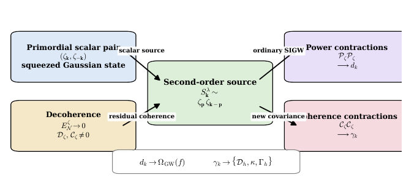
<figcaption class="paper-figure-caption"><b>Fig 1.</b> FIGURE 1: Schematic illustration of the correlation-transfer mechanism. Primordial cur- vature perturbations are produced as squeezed Gaussian opposite-momentum pairs and may retain residual discord and anomalous coherence after decoherence. Through the second-order source term ζpζk−p, scalar power contractions generate the ordinary induced tensor power, while anomalous scalar coherence contractions can generate opposite-mode tensor coherence in the induced gravitational-wave sector. The explicit transfer relations are derived in Sec. 5.</figcaption>
</figure>
<figure class="paper-figure-card">
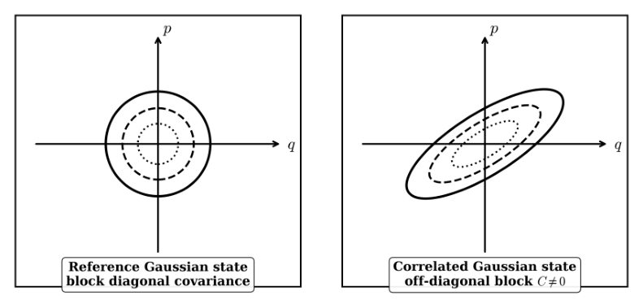
<figcaption class="paper-figure-caption"><b>Fig 2.</b> FIGURE 2: Phase-space representation of Gaussian covariance structure for a two-mode system (k, −k). Left: an uncorrelated Gaussian reference state with a block-diagonal covariance matrix and vanishing inter-mode correlations. Right: a correlated Gaussian state in which the off-diagonal covariance block correlates the two modes. The deformation and orientation of the Wigner-function contours encode the strength and phase of the correlations, while the area of each contour is related to the mixedness of the state.</figcaption>
</figure>
<figure class="paper-figure-card">
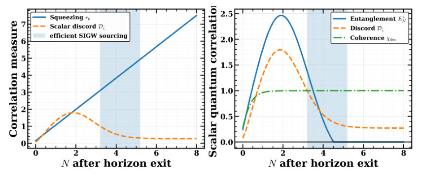
<figcaption class="paper-figure-caption"><b>Fig 3.</b> FIGURE 3: Illustrative evolution of scalar squeezing and quantum correlations in the deco- hered squeezed-state model. The squeezing parameter grows outside the horizon, while decoher- ence suppresses scalar entanglement. Gaussian discord and the anomalous coherence fraction can remain nonzero after the logarithmic negativity has vanished. The shaded region indicates the epoch in which scalar perturbations can efficiently source induced tensor modes.</figcaption>
</figure>
<figure class="paper-figure-card">
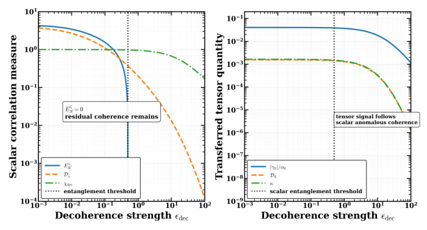
<figcaption class="paper-figure-caption"><b>Fig 4.</b> FIGURE 4: Benchmark illustration of scalar-to-tensor coherence transfer as a function of the decoherence strength ϵdec. The left panel shows the decay of scalar entanglement, the persistence of scalar discord, and the anomalous coherence fraction χdec. The right panel shows the corresponding transferred tensor quantities controlled by the opposite-mode coherence γk. The vertical line marks the scalar entanglement threshold. The plot is illustrative and uses a fixed kernel normalization.</figcaption>
</figure>
<figure class="paper-figure-card">
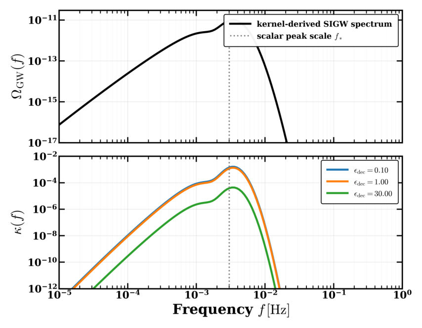
<figcaption class="paper-figure-caption"><b>Fig 5.</b> FIGURE 5: Kernel-derived benchmark signatures from a localized scalar source. The upper panel shows the scalar-induced gravitational-wave spectrum obtained from the radiation-era transfer kernel for a log-normal scalar power spectrum. The lower panel shows the connected covariance statistic κ(f) generated by transferred opposite-mode tensor coherence for represen- tative decoherence strengths. The figure is a benchmark calculation tied to the same scalar spectrum and transfer kernel, not a full detector-level forecast.</figcaption>
</figure>
</div>

<p><strong>Summary.</strong> This work explores how residual quantum information, specifically anomalous scalar coherence that persists after entanglement vanishes due to decoherence, can leave detectable imprints on the background of induced gravitational waves. Instead of predicting a simple spectral shift, the authors predict a unique correlated tensor background characterized by non-trivial covariance and phase structure. This offers a novel probe for primordial quantum correlations beyond standard entanglement measurements.</p>
<p><strong>Why it may be interesting.</strong> The focus on discord and coherence as robust quantum measures surviving decoherence provides a theoretical framework applicable to any system where initial quantum correlations are expected but might be masked by environmental coupling or classical averaging.</p>
<details>
<summary>Detailed structure</summary>
<p><strong>Main problem.</strong> The study investigates whether residual quantum-information properties, beyond simple entanglement, survive decoherence in the scalar sector and leave measurable imprints on induced gravitational waves.</p>
<p><strong>Main result.</strong> The primary signature is not a universal shift in the spectrum, but rather a correlated tensor background characterized by nontrivial covariance and phase structure, sourced by anomalous scalar coherence contractions.</p>
<p><strong>Method.</strong> The analysis employs the covariance-matrix formalism and uses continuous-variable Gaussian quantum state descriptions to derive transfer relations between scalar and induced tensor correlations.</p>
<p><strong>Model / system.</strong> The system models gravitational waves induced at second order from primordial curvature perturbations ($\zeta$), treating $\zeta$ as a decohered two-mode squeezed Gaussian state. The analysis tracks the evolution of quantum correlations (discord, coherence) through this process.</p>
<p><strong>Key observables.</strong> Connected power covariance $\kappa(k)$, opposite-mode tensor coherence $\gamma_k$, and phase-sensitive strain correlators $\Gamma_h(k)$.</p>
<p><strong>Important parameters / regimes.</strong> Decoherence parameter ($\epsilon_{	ext{dec}}$), squeezing parameters ($r_k$), and the effective residual-coherence amplitude ($\alpha_{	ext{coh}}$).</p>
<p><strong>Assumptions / limitations.</strong> The analysis relies on leading order (Wick contractions) approximations for calculating four-point functions, assuming Gaussian dynamics.</p>
<p><strong>Figures summary.</strong> Figures schematically illustrate the decay of entanglement versus the survival of discord and anomalous coherence, showing how this residual coherence sources off-diagonal tensor correlations.</p>
<p><strong>Paper structure.</strong> The paper progresses by first establishing the quantum measures (discord vs. entanglement) in the scalar sector; then deriving the transfer relations connecting these residual coherences to the induced tensor covariance matrix components ($\gamma_k$); finally, identifying measurable observables like $\kappa(k)$ and $\Gamma_h(k)$ for future detection.</p>
</details>
<details>
<summary>Abstract</summary>
<p>Scalar-induced gravitational waves are usually modeled as a classical stochastic background sourced by primordial curvature perturbations. We investigate whether residual quantum-information properties of the scalar sector can survive decoherence and leave imprints in the induced tensor background. Using the covariance-matrix formalism, we describe primordial curvature perturbations as decohered two-mode squeezed Gaussian states and identify the anomalous scalar coherence that may remain after scalar entanglement has vanished. We then derive the leading scalar-to-tensor transfer relations for opposite-momentum induced tensor modes. The ordinary tensor power is sourced by scalar power contractions, whereas the opposite-mode tensor coherence is sourced by anomalous scalar-coherence contractions. This tensor coherence controls the induced Gaussian discord and generates connected and phase-sensitive observables, including a connected power covariance $κ(k)\propto |γ_k|^2/α_k^2$. Thus the robust signature is not a universal shift of the gravitational-wave spectrum, but a correlated tensor background with nontrivial covariance and phase structure. We discuss phenomenological templates and provide an illustrative Fisher estimate for future gravitational-wave observations. Our results suggest that scalar-induced gravitational waves may offer a new probe of primordial quantum correlations beyond entanglement.</p>
</details>
<p><sub><a href="#top">↑ back to top</a></sub></p>

<p><a id="paper-2606.22714"></a></p>
<h3 id="emergence-of-gaussian-entanglement-and-non-gaussianity-in-high-harmonic-generation-driven-by-bright-squeezed-light"><a href="http://arxiv.org/abs/2606.22714v1">Emergence of Gaussian entanglement and non-Gaussianity in high-harmonic generation driven by bright squeezed light</a></h3>
<p><strong>Authors:</strong> J. Rivera-Dean, M. Even-Tzur, M. F. Ciappina, C. Granados, O. Cohen, P. Stammer<br>
<strong>Type:</strong> theory · <strong>Category:</strong> quantum information and computing · <strong>PDF:</strong> <a href="https://arxiv.org/pdf/2606.22714v1">https://arxiv.org/pdf/2606.22714v1</a><br>
<strong>Analysis basis:</strong> full PDF text, analyzed in chunks
<strong>Topic relevance:</strong> 🔥 <code>entanglement &amp; information structure</code> <strong>4/5</strong> · <code>interference shaping light</code> <strong>3/5</strong> · <code>Keldysh / 2PI / non-Gaussian methods</code> <strong>2/5</strong> · <code>correlated / nonlocal dissipation</code> <strong>1/5</strong> · <code>driven-dissipative phase transition</code> <strong>1/5</strong> · <code>methods for driven-dissipative</code> <strong>1/5</strong> · <code>non-equilibrium dynamics</code> <strong>1/5</strong></p>
<div class="figure-strip-hint">↔ Scroll figures horizontally</div>
<div class="paper-figures-scroll">
<figure class="paper-figure-card">
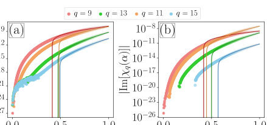
<figcaption class="paper-figure-caption"><b>Fig 1.</b> FIG. 1. Dependence of the (a) real and (b) imaginary parts of the HHG spectral amplitudes for a BSV driver as a function of the electric field strength εx = 2καx. The transparency of each point highlights the probability of finding such field component within the BSV field distribution. The continu- ous curves show fits of the form χq(α) = Aqα pq,x x + iBqα pq,x y for each harmonic mode. Calculations have been carried per- formed for hydrogen (Ip ≃0.5 a.u.), using a driving field of frequency ω = 0.057 a.u., and a squeezing intensity Isqu = κ2 sinh2(r) = 2.5 × 10−6 a.u. Here, q represents harmonic or- ders of the 2ω drive.</figcaption>
</figure>
<figure class="paper-figure-card">
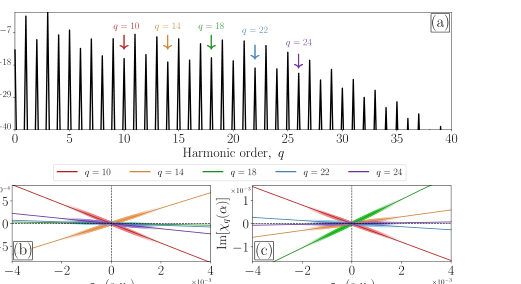
<figcaption class="paper-figure-caption"><b>Fig 2.</b> FIG. 2. (a) HHG spectrum and (b,c) dependence of the real and imaginary parts, respectively, of the HHG spectral ampli- tudes for a bichromatic configuration, consisting of a strong coherent field at frequency ω and a perturbative BSV com- ponent at frequency 2ω. The transparency of each point in panels (b) and (c) highlights the probability of finding such field component within the BSV field distribution. The con- tinuous curves in panels (b) and (c) display the linear fits of the form χq(α) = (Aq +iBq)αx for each harmonic mode. Cal- culations have been performed for xenon (Ip ≃0.446 a.u.), using a driving field frequency ω = 0.057 a.u., a coherent field strength εω = 0.053 a.u., and a...</figcaption>
</figure>
<figure class="paper-figure-card">
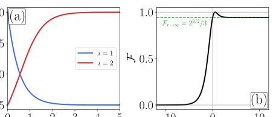
<figcaption class="paper-figure-caption"><b>Fig 3.</b> FIG. 3. (a) Comparison between the variances along the anti- squeezed (blue curve) and squeezed (red curve) field quadra- tures for our one-quadrature model of the BSV driver and the exact squeezed-vacuum state. (b) Fidelity between both states as a function of r, with the green dashed line displaying the asymptotic fidelity in the limit r →∞.</figcaption>
</figure>
<figure class="paper-figure-card">
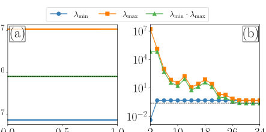
<figcaption class="paper-figure-caption"><b>Fig 4.</b> FIG. 4. Eigenvalues of the covariance matrix for (a) the collective mode defined in Eq. (24), and (b) individual har- monic modes obtained after tracing out all other modes, for ϱ = 10−3. The black dashed line indicates the Heisenberg un- decrtainty limit λmin · λmax = 1/4. Calculations have been done for xenon atoms (Ip ≃0.446 a.u.), using a driving field frequency ω = 0.057 a.u., a coherent field strength εω = 0.053 a.u., and a squeezing parameter r = 9 corresponding to a squeezing intensity Isqu ∼10−7 a.u. for κ = 5 × 10−8 a.u.</figcaption>
</figure>
<figure class="paper-figure-card">
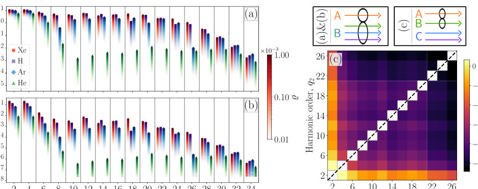
<figcaption class="paper-figure-caption"><b>Fig 5.</b> FIG. 5. Entanglement characterization of the resulting quantum optical state, with bipartitions chosen as shown in the inset at the top right corner of the figure. (a),(b) Entanglement between one harmonic mode and all other modes, as a function of the harmonic mode index, characterized through the logarithmic negativity and the Duan-Simon criterion, respectively. (c) Pairwise entanglement evaluated using the logarithmic negativity for ϱ = 10−3. The same parameters as in Fig. 4 have been used for the field, while different atomic systems have are considered, with ionization potentials I(Xe) p ≃0.446 a.u. &lt; I(H) p ≃ 0.5 a.u. &lt; I(Ar) p ≃0.579 a.u. &lt; I(He) p ≃0.903 a.u.</figcaption>
</figure>
</div>

<p><strong>Summary.</strong> This paper theoretically analyzes High-Harmonic Generation driven by bright squeezed vacuum light to study entanglement generation. Using tools like covariance matrices and logarithmic negativity, the authors show that while the system often remains Gaussian, strong squeezing can induce non-classical correlations. This positions HHG as a promising platform for engineering quantum states of light.</p>
<p><strong>Why it may be interesting.</strong> This work bridges nonlinear optics (HHG) with advanced quantum information concepts (entanglement, squeezing). It shows how a fundamental physical process can serve as an engineered platform for generating complex entangled states of light in the extreme UV regime.</p>
<details>
<summary>Detailed structure</summary>
<p><strong>Main problem.</strong> The study investigates how High-Harmonic Generation (HHG) driven by Bright Squeezed Vacuum (BSV) light modifies the quantum statistical properties of the emitted harmonics, specifically looking for entanglement generation.</p>
<p><strong>Main result.</strong> Bichromatic driving with BSV light can generate non-classical multimode Gaussian entanglement in the even harmonic field. The analysis systematically characterizes the transition regimes where this description holds or breaks down into genuinely non-Gaussian states.</p>
<p><strong>Method.</strong> The authors employ quantum characteristic functions, covariance matrix analysis, and entanglement measures like logarithmic negativity to characterize the generated quantum state.</p>
<p><strong>Model / system.</strong> The physical system is HHG in atomic systems driven by a combination of a strong coherent field ($\omega$) and a perturbative BSV field ($2\omega$). The theoretical framework models the evolution using approximations derived from the time-dependent dipole moment.</p>
<p><strong>Key observables.</strong> Gaussian entanglement structure, covariance matrix elements, quantum teleportation fidelity, logarithmic negativity, and Wigner functions.</p>
<p><strong>Important parameters / regimes.</strong> Squeezing parameter (r), effective coupling parameter ($\varrho$), harmonic order ($2\omega, 3\omega, \dots$), and the ratio of driving field strengths.</p>
<p><strong>Assumptions / limitations.</strong> The analysis relies on low-depletion approximations for the propagator element and often utilizes simplified one-quadrature models for the BSV driver state.</p>
<p><strong>Figures summary.</strong> Figures illustrate quadrature variances comparing different models, show entanglement quantification via logarithmic negativity across harmonic orders, and display Wigner functions demonstrating the transition from Gaussian to non-Gaussian states as squeezing increases.</p>
<p><strong>Paper structure.</strong> The paper progresses by first establishing the theoretical framework using characteristic functions for HHG. It then analyzes specific driving configurations (bichromatic) to derive the state's properties, quantifying entanglement via covariance matrices and fidelity benchmarks before mapping out the transition regimes where Gaussianity breaks down.</p>
</details>
<details>
<summary>Abstract</summary>
<p>High harmonic generation (HHG) is a highly nonlinear optical process in which radiation from a strong driving field is up-converted into its high-order harmonics. In atomic systems, this nonlinearity manifests itself through the intensity scaling of the emitted harmonics with the driving field strength. Despite the highly nonlinear nature of HHG, when the driving field is prepared in a classical Gaussian state and atomic depletion remains negligible, the quantum statistical properties of the generated harmonics retains classical Gaussian quantum statistics. Driving HHG with bright squeezed vacuum (BSV) light challenges this paradigm, as its enhanced field fluctuations can modify the statistical properties of the generated harmonics. In this work, we investigate the conditions under which BSV-driven HHG gives rise to non-classical Gaussian states, and identify the regimes where this Gaussian description breaks down. For bichromatic driving by a strong coherent field at frequency $ω$ and a perturbative BSV field at $2ω$, the even-harmonic response is approximately linear in the BSV quadrature, leading to non-classical multimode Gaussian entanglement in the harmonic field. We show that this state can be described as a distributed collective squeezed mode over the even-harmonic manifold, and characterize its covariance matrix, entanglement structure, and quantum teleportation fidelity as an operational benchmark. Our results highlight the potential of non-classically driven HHG as a platform for engineering Gaussian and non-Gaussian states of light in the extreme ultraviolet regime.</p>
</details>
<p><sub><a href="#top">↑ back to top</a></sub></p>

<p><a id="paper-2606.22530"></a></p>
<h3 id="liouvillian-geometry-of-multidimensional-spectra-pathway-transport-and-observational-holonomy-in-open-quantum-systems"><a href="http://arxiv.org/abs/2606.22530v1">Liouvillian Geometry of Multidimensional Spectra: Pathway Transport and Observational Holonomy in Open Quantum Systems</a></h3>
<p><strong>Authors:</strong> Eric R. Bittner, Carlos Silva-Acuña, Hao Li<br>
<strong>Type:</strong> theory · <strong>Category:</strong> other · <strong>PDF:</strong> <a href="https://arxiv.org/pdf/2606.22530v1">https://arxiv.org/pdf/2606.22530v1</a><br>
<strong>Analysis basis:</strong> full PDF text, analyzed in chunks
<strong>Topic relevance:</strong> 🔥 <code>methods for driven-dissipative</code> <strong>4/5</strong> · <code>Keldysh / 2PI / non-Gaussian methods</code> <strong>3/5</strong> · <code>non-equilibrium dynamics</code> <strong>2/5</strong> · <code>correlated / nonlocal dissipation</code> <strong>1/5</strong> · <code>driven-dissipative phase transition</code> <strong>1/5</strong> · <code>non-equilibrium universality</code> <strong>1/5</strong> · <code>quantum measurements</code> <strong>1/5</strong></p>
<div class="figure-strip-hint">↔ Scroll figures horizontally</div>
<div class="paper-figures-scroll">
<figure class="paper-figure-card">
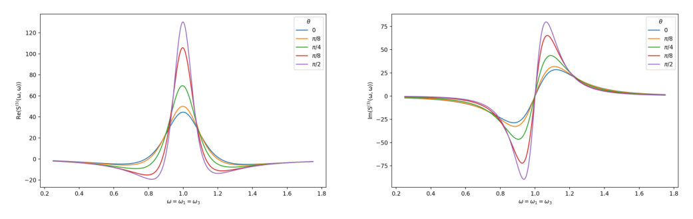
<figcaption class="paper-figure-caption"><b>Fig 1.</b> FIG. 1: Real (left) and imaginary (right) components of the diagonal spectral response for increasing pointer-basis misalignment θ. At θ = 0, only dephasing contributions are present. For θ ̸= 0, basis misalignment mixes response pathways, producing continuous and structured deformations of the complex spectrum. These serve as benchmarks for the Duhamel reconstructions shown in Fig. 2.</figcaption>
</figure>
<figure class="paper-figure-card">
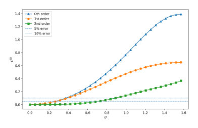
<figcaption class="paper-figure-caption"><b>Fig 2.</b> FIG. 2: Global reconstruction error ϵ(n) for the first- and second-order Duhamel transport expansions as a function of pointer-basis misalignment θ. The zeroth-order curve compares the θ = 0 signal to the exact result at θ ̸= 0. The second-order approximation remains accurate throughout the full range of misalignment, including at θ = π/2 where the observational and pointer bases are maximally misaligned.</figcaption>
</figure>
<figure class="paper-figure-card">
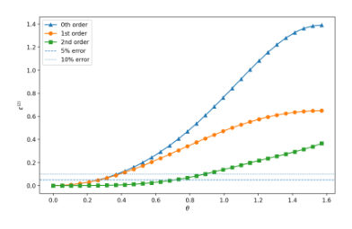
<figcaption class="paper-figure-caption"><b>Fig 3.</b> Figure 2 shows that the transport expansion remains accurate throughout the full range of basis misalignment. The first-order approximation captures the leading ef- fects of pathway transport; the second-order terms sub- stantially improve the reconstruction and remain accu- rate even at θ = π/2, where the observational and pointer bases are maximally misaligned. This robustness is the key quantitative result of this section. Although the Duhamel expansion is derived from local Liouvillian deformations about θ = 0, it re- mains accurate well beyond the regime where a weak-</figcaption>
</figure>
<figure class="paper-figure-card">
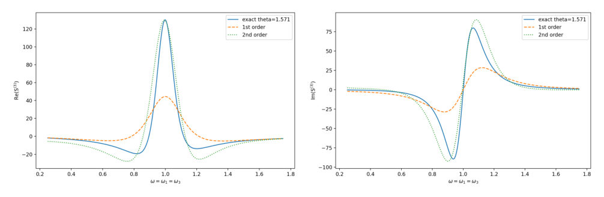
<figcaption class="paper-figure-caption"><b>Fig 4.</b> FIG. 3: Comparison between exact and reconstructed signals at maximal misalignment θ = π/2. The second-order Duhamel reconstruction reproduces the exact response with high fidelity even in this strongly deformed regime.</figcaption>
</figure>
</div>

<p><strong>Summary.</strong> The paper introduces a novel geometric framework to interpret multidimensional spectroscopy in open quantum systems. It argues that environmental coupling causes continuous 'transport' of amplitude among spectroscopically defined pathways within Liouville space. By quantifying this transport using concepts like Liouvillian curvature and holonomy, the authors show how spectral distortions can be mapped back to the underlying structural misalignment between different physical bases.</p>
<p><strong>Why it may be interesting.</strong> This work provides a powerful geometric lens to analyze complex quantum dynamics in the presence of dissipation, connecting fundamental concepts like Berry phase/holonomy directly to measurable spectroscopic signatures in open systems.</p>
<details>
<summary>Detailed structure</summary>
<p><strong>Main problem.</strong> Standard interpretations of multidimensional spectroscopy fail in open quantum systems because environmental interactions cause continuous amplitude redistribution among Liouville pathways, which is not accounted for by treating pathways as fixed objects.</p>
<p><strong>Main result.</strong> The paper develops a geometric framework showing that pathway transport is governed by a Liouvillian connection and curvature, reinterpreting spectral distortions as measurable signatures of this curved geometry rather than mere broadening corrections.</p>
<p><strong>Method.</strong> It employs the language of differential geometry (connections, curvature, holonomy) applied to the Liouville space propagator, utilizing Duhamel expansions to derive reconstruction procedures for transport operators.</p>
<p><strong>Model / system.</strong> The system is an open quantum system undergoing spectroscopic measurements, modeled by a Liouvillian $\mathcal{L}(t)$ that includes Hamiltonian evolution ($\mathcal{L}_H$), external field interactions ($V(t)$), and environmental dissipation ($\mathcal{D}_{	ext{bath}}$).</p>
<p><strong>Key observables.</strong> Spectral distortions, peak shifts, and the observational holonomy derived from nonlinear spectroscopic response.</p>
<p><strong>Important parameters / regimes.</strong> Basis misalignment angle ($\theta$) between the Hamiltonian eigenbasis and the environment-selected pointer basis.</p>
<p><strong>Assumptions / limitations.</strong> The framework assumes that environmental interactions induce a measurable transport structure in Liouville space due to basis incompatibility, allowing for geometric reconstruction from observables.</p>
<p><strong>Figures summary.</strong> Figures illustrate how spectral responses (real/imaginary components) are structured by the misalignment angle $\theta$, and demonstrate the high accuracy of second-order Duhamel expansions in reconstructing these signals up to maximal misalignment ($\theta = \pi/2$).</p>
<p><strong>Paper structure.</strong> The paper progresses from identifying the failure of fixed pathway assumptions in open systems, developing a geometric framework using Liouvillian connections and curvature, deriving reconstruction procedures via Duhamel expansion, and finally demonstrating that spectral features are determined by amplitude transport rather than just existing pathways.</p>
</details>
<details>
<summary>Abstract</summary>
<p>Liouville pathways provide the conceptual foundation for interpreting multidimensional spectroscopies, yet are typically treated as fixed objects that evolve independently between optical interactions. In open quantum systems, this picture is incomplete. Environmental interactions continuously redistribute amplitude among pathways during every free-evolution interval, generating transport that leaves measurable signatures in the nonlinear spectroscopic response. We develop a geometric framework in which pathway transport is governed by a Liouvillian connection, its associated curvature, and the resulting observational holonomy. The framework applies to open quantum systems in which the environment selects a pointer basis distinct from the observational basis used to construct the spectroscopic response. This basis incompatibility induces transport among Liouville pathways, generating characteristic spectral distortions and a nontrivial Liouvillian curvature. Using a Duhamel expansion of the Liouvillian propagator, we derive a reconstruction procedure that identifies the transport operators responsible for the observed redistribution of pathway weight, accurate throughout the full range of basis misalignment. This perspective reframes spectral features as determined not only by which pathways exist but by how amplitude is transported among them. Spectral distortions, peak shifts, and otherwise-forbidden pathway contributions become geometric signatures of a curved Liouville-space manifold rather than phenomenological broadening corrections, identifying pathway geometry as a complementary layer of organization in nonlinear spectroscopy.</p>
</details>
<p><sub><a href="#top">↑ back to top</a></sub></p>

<p><a id="paper-2606.22816"></a></p>
<h3 id="isometrization-of-tensor-network-states-via-gauge-propagation"><a href="http://arxiv.org/abs/2606.22816v1">Isometrization of Tensor Network States via Gauge Propagation</a></h3>
<p><strong>Authors:</strong> Zhiyu Jiang, Hiroshi Ueda<br>
<strong>Type:</strong> theory · <strong>Category:</strong> numerical methods · <strong>PDF:</strong> <a href="https://arxiv.org/pdf/2606.22816v1">https://arxiv.org/pdf/2606.22816v1</a><br>
<strong>Analysis basis:</strong> full PDF text, analyzed in chunks
<strong>Topic relevance:</strong> 🔥 <code>methods for driven-dissipative</code> <strong>4/5</strong> · <code>analog quantum simulation</code> <strong>3/5</strong> · <code>exotic spin models in light-matter</code> <strong>3/5</strong> · <code>entanglement &amp; information structure</code> <strong>1/5</strong> · <code>non-equilibrium dynamics</code> <strong>1/5</strong></p>
<div class="figure-strip-hint">↔ Scroll figures horizontally</div>
<div class="paper-figures-scroll">
<figure class="paper-figure-card">
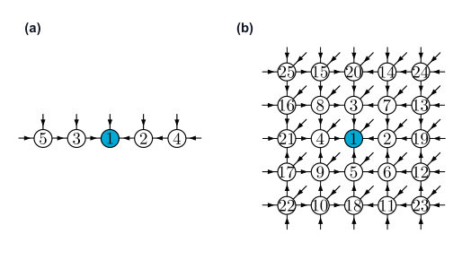
<figcaption class="paper-figure-caption"><b>Fig 1.</b> FIG. 1. Schematic illustration of the gauge-propagation or- dering. The highlighted tensor labeled 1 is the orthogonality center, and arrows indicate gauge-propagation directions. (a) One-dimensional chain with inward propagation from both sides. (b) Two-dimensional lattice. Away from the central row and column, a local step can have multiple outgoing prop- agation directions.</figcaption>
</figure>
<figure class="paper-figure-card">
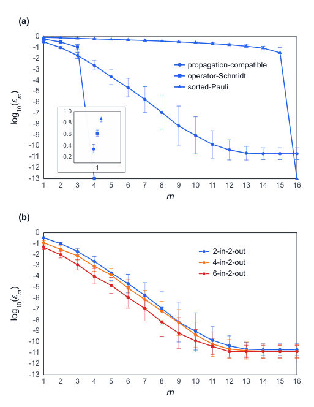
<figcaption class="paper-figure-caption"><b>Fig 2.</b> FIG. 2. Local decomposition benchmarks for random ten- sors with leg dimension χ = 2. (a) Comparison between the propagation-compatible decomposition, the operator-Schmidt decomposition, and the sorted Pauli expansion for random 2-in-2-out tensors. (b) Cluster-size comparison using 2-in-2- out, 4-in-2-out, and 6-in-2-out local clusters. Here m is the number of retained terms and εm is the Frobenius residual after retaining m terms. Curves show ⟨log10 εm⟩over 20 sam- ples, and error bars indicate one sample standard deviation of log10 εm.</figcaption>
</figure>
<figure class="paper-figure-card">
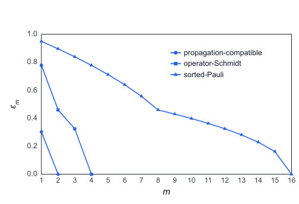
<figcaption class="paper-figure-caption"><b>Fig 3.</b> FIG. 3. Local decomposition benchmark for the minimal 2- in-2-out LG tensor bT (2→2) LG . The propagation-compatible de- composition is compared with the operator-Schmidt decom- position and the sorted Pauli expansion. Here m denotes the number of retained terms, and εm denotes the Frobenius residual error after retaining m terms.</figcaption>
</figure>
<figure class="paper-figure-card">
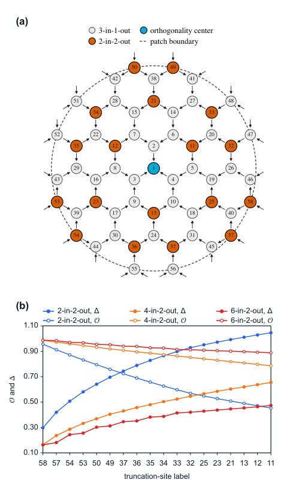
<figcaption class="paper-figure-caption"><b>Fig 4.</b> FIG. 4. Gauge propagation on a finite honeycomb LG ten- sor network containing 58 physical sites and 24 open auxiliary boundary indices, with physical indices omitted. The omit- ted physical indices are included in the incoming index groups under the convention of Sec. II A. (a) Propagation geome- try toward the orthogonality center. Sites are labeled by the inward propagation order; 2-in-2-out sites mark the trunca- tion events, while 3-in-1-out sites are treated by exact single- output SVD steps. (b) Accumulated normalized state error ∆ℓand normalized overlap Oℓduring inward propagation. The horizontal-axis labels in (b) correspond to the 2-in-2-out truncation sites in (a). For the curve...</figcaption>
</figure>
</div>

<p><strong>Summary.</strong> This work introduces a novel gauge-propagation approach to approximate the conversion of general tensor networks into isometric forms. By developing a structured local decomposition, it provides a systematic way to manage non-isometric residuals in higher dimensions. The method is shown to effectively reduce errors when applied to models like the Kitaev spin liquid, offering a powerful tool for variational optimization.</p>
<p><strong>Why it may be interesting.</strong> The development of robust, systematic methods for enforcing physical constraints (like isometry) within tensor network representations is crucial for accurately simulating strongly correlated quantum materials where standard contractions fail due to gauge redundancy.</p>
<details>
<summary>Detailed structure</summary>
<p><strong>Main problem.</strong> The paper addresses the challenge of converting generic tensor-network states into an isometric form (isoTNS) by developing a gauge-propagation approach.</p>
<p><strong>Main result.</strong> A structured local decomposition method is proposed that allows for controlled approximation of non-isometric tensors, showing significant error reduction when applied to models like the Kitaev spin liquid.</p>
<p><strong>Method.</strong> The core technique involves defining a propagation-compatible local decomposition where complex residuals are approximated as sums of structured terms, enabling iterative refinement via truncation.</p>
<p><strong>Model / system.</strong> The method is tested on random tensors and specifically on the loop-gas tensor representation used for describing the Kitaev spin liquid (KSL) on honeycomb lattices. It applies to general tensor network states (e.g., MPS/PEPS).</p>
<p><strong>Key observables.</strong> Local residuals, accumulated propagation errors ($\Delta_\ell$), normalized overlap ($O_\ell$), and truncation error bounds ($\epsilon_m$).</p>
<p><strong>Important parameters / regimes.</strong> The local cluster size (e.g., 2-in-2-out up to 6-in-2-out) and the number of retained structured terms ($m$) are key parameters controlling approximation quality.</p>
<p><strong>Assumptions / limitations.</strong> The primary assumption is that the residual factor can be approximated by a sum of absorbable, structured local tensors; in higher dimensions, this requires an approximation due to structural obstructions.</p>
<p><strong>Figures summary.</strong> Figures illustrate gauge propagation geometry on 1D and 2D lattices. Benchmarks compare decomposition methods for random and LG tensors, showing error reduction upon increasing the number of retained terms or enlarging the local cluster size.</p>
<p><strong>Paper structure.</strong> The paper first introduces the goal (isoTNS via gauge propagation), contrasts exact 1D propagation with obstructed higher-dimensional cases, develops the structured local decomposition approximation, analyzes its convergence using multi-term truncation bounds, and finally validates it by simulating error accumulation on a finite honeycomb lattice.</p>
</details>
<details>
<summary>Abstract</summary>
<p>We introduce a gauge-propagation approach for approximately converting generic tensor-network states into an isometric tensor-network state form with a prescribed orthogonality center. In one dimension, this propagation is exact because the non-isometric factor produced by a QR or singular-value decomposition is supported on a single virtual bond. In higher-dimensional networks, however, a local step can have several outgoing directions, and the residual factor is generally not separable into independent single-bond contributions. We address this local obstruction by approximating a local tensor, or a contracted local cluster, by structured terms consisting of an isometric factor multiplied by a tensor product of output-leg factors. The isometric factor is retained at the current site or cluster, while the output-leg factors are absorbed into neighboring tensors along the propagation directions. This construction provides a local truncation criterion for gauge propagation and a practical route to refinement by increasing the number of retained terms or enlarging the local cluster. Benchmarks on random tensors and on the loop-gas tensor representation of the Kitaev spin liquid show that this refinement reduces both local residuals and accumulated propagation errors. For the loop-gas tensor, two structured terms reduce the local residual to numerical precision, and enlarging the local object from 2-in-2-out to 4-in-2-out and 6-in-2-out clusters lowers both local truncation errors and accumulated errors in finite honeycomb gauge propagation. These results identify propagation-compatible local decomposition as a useful building block for approximate isometrization and as a potential initializer or preconditioner for variational isoTNS algorithms.</p>
</details>
<p><sub><a href="#top">↑ back to top</a></sub></p>

<p><a id="paper-2606.22080"></a></p>
<h3 id="optimizing-pump-conditions-of-parametric-amplifiers-for-fast-multiplexed-readout-of-superconducting-qubits"><a href="http://arxiv.org/abs/2606.22080v1">Optimizing Pump Conditions of Parametric Amplifiers for Fast Multiplexed Readout of Superconducting Qubits</a></h3>
<p><strong>Authors:</strong> Jeongwon Kim, Wei Dai, Omrie Ovdat, Akiva Feintuch, Nir Alfasi, Yonuk Chong<br>
<strong>Type:</strong> experiment · <strong>Category:</strong> quantum information and computing · <strong>PDF:</strong> <a href="https://arxiv.org/pdf/2606.22080v1">https://arxiv.org/pdf/2606.22080v1</a><br>
<strong>Analysis basis:</strong> full PDF text, analyzed in chunks
<strong>Topic relevance:</strong> 🔥 <code>QC/QI experiment</code> <strong>4/5</strong> · <code>quantum measurements</code> <strong>2/5</strong> · <code>quantum optics experiment</code> <strong>2/5</strong> · <code>correlated / nonlocal dissipation</code> <strong>1/5</strong> · <code>driven-dissipative phase transition</code> <strong>1/5</strong> · <code>methods for driven-dissipative</code> <strong>1/5</strong></p>
<div class="figure-strip-hint">↔ Scroll figures horizontally</div>
<div class="paper-figures-scroll">
<figure class="paper-figure-card">
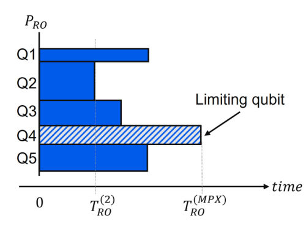
<figcaption class="paper-figure-caption"><b>Fig 1.</b> FIG. 1. Schematic of multiplexed readout pulses for five qubits. All readout tones are applied simultaneously at time 0 on a shared feed- line, but the readout amplitude PRO (pulse height) and the readout time T (i) RO required for each qubit to reach a target SNR can differ. In this example, Q4 requires the longest readout time, making Q4 the limiting qubit for the multiplexed readout. The total multiplexed readout time T (MPX) RO is set by that of the limiting qubit.</figcaption>
</figure>
<figure class="paper-figure-card">
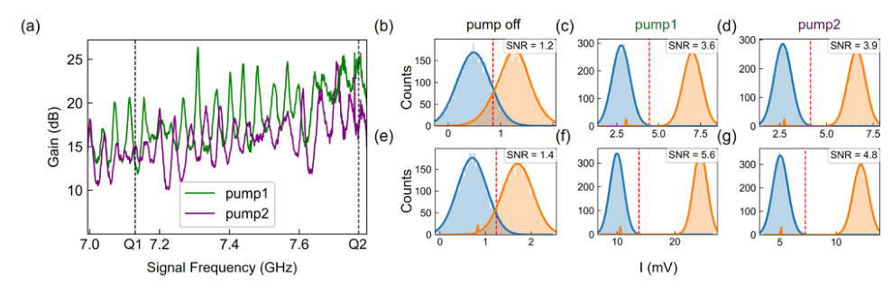
<figcaption class="paper-figure-caption"><b>Fig 2.</b> FIG. 2. Effect of TWPA pump conditions on readout performance. (a) TWPA gain profiles under two different pump conditions: pump 1 ( fp = 8.428GHz, Pp = −85.9dBm shown in green) and pump 2 ( fp = 8.382GHz, Pp = −85.7dBm shown in purple) respectively. The two black dashed lines mark the readout frequencies of two qubits: Q1 (7.12 GHz) and Q2 (7.77 GHz). (b–d) Gaussian fits to single-shot readout histograms of Q1 with the TWPA pump off, under pump1, and under pump2, respectively, using the same 1µs readout pulse. The corresponding SNR (Eq. 1) is annotated in the upper-right corner of each panel; blue (orange) corresponds to the ground (excited) state, and the red dashed line indicates the...</figcaption>
</figure>
<figure class="paper-figure-card">
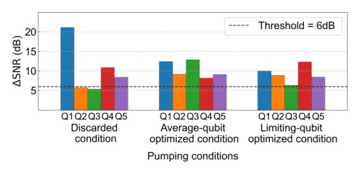
<figcaption class="paper-figure-caption"><b>Fig 3.</b> FIG. 3. ∆SNR for each qubit under three representative pump con- ditions. The black dashed line indicates the minimum acceptable ∆SNR threshold (6 dB in this experiment). The discarded condi- tion (8.244 GHz, −87.4 dBm) maximizes the average ∆SNR across all pump conditions, but it is rejected because Q2 and Q3 fall be- low the 6 dB threshold. The discarded condition yields an av- erage ∆SNR of 14.93 dB. The average-qubit-optimized condition (8.311 GHz, −86.9 dBm) is the feasible pump condition (all qubits above threshold) that maximizes the average ∆SNR, giving 10.77 dB. The limiting-qubit-optimized condition (8.328 GHz, −87.5 dBm) is the feasible setting that maximizes ∆SNR for the...</figcaption>
</figure>
<figure class="paper-figure-card">

<figcaption class="paper-figure-caption"><b>Fig 4.</b> Figure 3 shows how the TWPA pump condition reshapes the per-qubit performance profile and the selected pump points for the following experiment. We first exclude pump conditions that violate a minimum per-qubit requirement, ∆SNR ≥6dB. This removes “ripply” operating points that maximize the average ∆SNR but leave one or more channels below threshold, as illustrated by the discarded condition in Fig. 3. Among the remaining feasible conditions, we select</figcaption>
</figure>
<figure class="paper-figure-card">
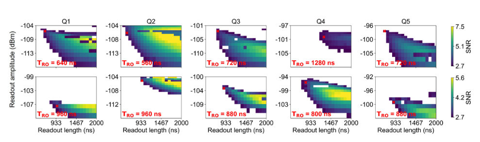
<figcaption class="paper-figure-caption"><b>Fig 5.</b> FIG. 4. Readout time required to reach SNR = 3 for each qubit under two TWPA pump conditions. Each panel shows the measured SNR as a function of readout amplitude and readout time, and the red cross marker indicates the shortest pulse that achieves SNR = 3 as described in Sec. II A. White regions correspond to SNR &lt; 2.7. Top row: average-qubit-optimized pump ( fp = 8.311GHz, Pp = −86.9dBm). Q4 requires</figcaption>
</figure>
</div>

<p><strong>Summary.</strong> The research addresses how to optimize parametric amplifiers for fast, multi-qubit readout of superconducting qubits. The authors propose a novel strategy that prioritizes improving the performance of the single slowest qubit channel (the bottleneck). This approach experimentally demonstrated a significant reduction in overall readout time compared to optimizing for average performance across all qubits.</p>
<p><strong>Why it may be interesting.</strong> This work is highly relevant to quantum optics and open quantum systems because it tackles practical engineering constraints (readout speed) in superconducting circuits by optimizing the coupling element (parametric amplifier) based on system bottlenecks rather than simple averages.</p>
<details>
<summary>Detailed structure</summary>
<p><strong>Main problem.</strong> The primary goal is to develop a pump optimization strategy for parametric amplifiers used in superconducting qubit readout chains to minimize the total multiplexed readout time.</p>
<p><strong>Main result.</strong> By optimizing the amplifier pump condition based on the limiting (slowest) qubit channel rather than the average SNR, the authors achieved a significant reduction in the overall multiplexed readout time (e.g., 25% reduction).</p>
<p><strong>Method.</strong> The study experimentally calibrates the parametric amplifier by sweeping its frequency and power while comparing two optimization metrics: maximizing average $\Delta	ext{SNR}$ versus maximizing $\Delta	ext{SNR}$ for the bottleneck qubit.</p>
<p><strong>Model / system.</strong> The system involves superconducting qubits (e.g., five tunable transmon qubits) whose readout signals are amplified by a Traveling-Wave Parametric Amplifier (TWPA). The performance is governed by the interplay between amplifier gain, noise, and qubit relaxation times ($T_1$).</p>
<p><strong>Key observables.</strong> Multiplexed Readout Time ($T_{	ext{MPX}}^{	ext{RO}}$), Signal-to-Noise Ratio ($   ext{SNR}$), $\Delta	ext{SNR}$, and required readout time ($   ext{TRO}$) for individual qubits.</p>
<p><strong>Important parameters / regimes.</strong> Target SNR of 3 is chosen as the optimal point where further SNR improvement yields diminishing returns due to $T_1$ relaxation; the limiting qubit dictates $T_{	ext{MPX}}^{	ext{RO}}$.</p>
<p><strong>Assumptions / limitations.</strong> The analysis assumes that setting a fixed target $   ext{SNR}$ (e.g., 3) is optimal because increasing it further does not improve fidelity due to relaxation effects, and that readout time is limited by the slowest channel.</p>
<p><strong>Figures summary.</strong> Figures illustrate how different pump conditions affect gain profiles across multiple qubits; one figure compares the required readout times ($    ext{TRO}$) for both optimization strategies, showing a clear reduction in $T_{	ext{MPX}}^{	ext{RO}}$ when targeting the limiting qubit.</p>
<p><strong>Paper structure.</strong> The paper first establishes the problem of minimizing multiplexed readout time set by the slowest channel. It then compares conventional average-optimization against the proposed limiting-channel optimization strategy, demonstrating quantitative improvements using experimental measurements on a multi-qubit array.</p>
</details>
<details>
<summary>Abstract</summary>
<p>Low-noise parametric amplifiers are widely used as the first-stage amplifier in qubit readout chains. The performance of parametric amplifiers depends sensitively on the choice of the pump condition. We propose a strategy for determining the pump condition that is tailored for fast multiplexed readout. Choosing the amplifier pump to maximize the signal-to-noise ratio (SNR) improvement at the readout frequency of the limiting qubit--the qubit that requires the longest readout time to reach a target SNR--minimizes the total multiplexed readout time. We demonstrate our pump calibration strategy experimentally on a five-qubit multiplexed readout chain with a traveling-wave parametric amplifier. Using our strategy, we reduce the multiplexed readout time by 320 ns compared to optimizing the average SNR improvement on all qubits, without degrading the target SNR for any qubit.</p>
</details>
<p><sub><a href="#top">↑ back to top</a></sub></p>

<p><a id="paper-2606.22707"></a></p>
<h3 id="a-measurement-like-test-of-continuous-spontaneous-localization-with-a-reversible-nanoparticle-pointer"><a href="http://arxiv.org/abs/2606.22707v1">A Measurement-Like Test of Continuous Spontaneous Localization with a Reversible Nanoparticle Pointer</a></h3>
<p><strong>Authors:</strong> Peter Renkel<br>
<strong>Type:</strong> both · <strong>Category:</strong> other · <strong>PDF:</strong> <a href="https://arxiv.org/pdf/2606.22707v1">https://arxiv.org/pdf/2606.22707v1</a><br>
<strong>Analysis basis:</strong> full PDF text, analyzed in chunks
<strong>Topic relevance:</strong> 🔥 <code>quantum measurements</code> <strong>4/5</strong> · <code>measurement-induced transitions</code> <strong>3/5</strong> · <code>correlated / nonlocal dissipation</code> <strong>1/5</strong> · <code>driven-dissipative phase transition</code> <strong>1/5</strong> · <code>interference shaping light</code> <strong>1/5</strong></p>
<div class="figure-strip-hint">↔ Scroll figures horizontally</div>
<div class="paper-figures-scroll">
<figure class="paper-figure-card">

<figcaption class="paper-figure-caption"><b>Fig 1.</b> Figure 1: CSL comparison plot with the aggressive operating point set to ω = 1000 s−1. The blue and orange curves show the projected sensitivities of the chosen and aggressive operating points, evaluated with the same finite-size CSL integral used in the manuscript. The green curve is an approximate hand digitization of the direct KDTL matter-wave bound from Fig. 2 of Ref. [9]. The brown curve shows the radiation bound of Ref. [10], using the quoted λ/r2 c scaling and the bound λ &lt; 5.2 × 10−13 s−1 at rc = 10−7 m. The red and purple markers indicate the representative Adler- enhanced scale [6] and the original GRW value [1]. Stronger non-interferometric force-noise bounds are discussed in...</figcaption>
</figure>
</div>

<p><strong>Summary.</strong> The authors propose an advanced interferometric test to search for evidence of Continuous Spontaneous Localization (CSL) by monitoring the loss of coherence in a nanoparticle pointer. By utilizing the pointer reversibly, they aim to achieve sensitivities that surpass current direct matter-wave bounds. The work is significant because it outlines a pathway to probe fundamental physics theories using state-of-the-art trapped-matter quantum optics techniques.</p>
<p><strong>Why it may be interesting.</strong> This work provides a concrete, high-precision proposal for testing fundamental physics theories like objective collapse models using mesoscopic quantum systems, which is highly relevant to AMO research in quantum measurement and decoherence.</p>
<details>
<summary>Detailed structure</summary>
<p><strong>Main problem.</strong> The paper proposes an interferometric test to search for deviations from standard quantum mechanics predicted by Continuous Spontaneous Localization (CSL) theory.</p>
<p><strong>Main result.</strong> The proposed measurement-like protocol yields sensitivity estimates ($\lambda_{\min}$) that significantly improve upon existing direct matter-wave CSL bounds, although they do not surpass the strongest non-interferometric limits.</p>
<p><strong>Method.</strong> The test uses a trapped nanoparticle as a reversible mesoscopic pointer to temporarily store which-branch information from a microscopic superposition. Coherence loss is measured by comparing the visibility after recombination against predictions from standard QM versus CSL.</p>
<p><strong>Model / system.</strong> The system involves a two-branch quantum state interacting with a harmonic oscillator (the nanoparticle) via opposite weak forces, leading to conditional displacements. The dynamics are governed by modified Hamiltonians incorporating the CSL collapse rate ($\lambda$) and correlation length ($r_c$).</p>
<p><strong>Key observables.</strong> Visibility loss of microscopic coherence read out interferometrically after recombination; the minimum detectable CSL rate ($\lambda_{\min}$).</p>
<p><strong>Important parameters / regimes.</strong> Nanoparticle mass ($m \approx 10^{-18} 	ext{ kg}$), differential force ($F \approx 10^{-21} 	ext{ N}$), correlation length ($r_c$), and the ordinary loss budget ($\Lambda_{	ext{loss}} \lesssim 0.1$).</p>
<p><strong>Assumptions / limitations.</strong> The analysis relies on approximations valid in the small-separation regime ($D(t) \ll r_c$) and assumes that technical noise sources (like residual gas or timing mismatch) can be controlled below a specified threshold.</p>
<p><strong>Figures summary.</strong> Figure 1 compares projected sensitivities ($\lambda_{	ext{chosen}}$ vs $\lambda_{	ext{aggressive}}$) against various theoretical bounds, demonstrating the improvement over direct interferometric tests.</p>
<p><strong>Paper structure.</strong> The paper first introduces CSL and the experimental setup using a nanoparticle pointer. It derives the expected coherence loss from CSL theory, calculates the required sensitivity based on noise budgets (including systematic errors), and finally compares the achievable limits to existing theoretical bounds.</p>
</details>
<details>
<summary>Abstract</summary>
<p>We propose a measurement-like interferometric test of Continuous Spontaneous Localization (CSL), in which a trapped nanoparticle acts as a reversible mesoscopic pointer rather than as the initially prepared microscopic superposition. A microscopic two-branch system applies opposite weak forces to the nanoparticle, temporarily amplifying which-branch information into branch-conditioned pointer displacements. After one weak-trap period the pointer positions and momenta recombine, so ordinary quantum mechanics predicts recovery of the microscopic coherence, whereas CSL predicts an irreversible visibility loss accumulated while the pointer mass distributions were separated.   For a $10^{-18},{\rm kg}$ nanoparticle driven by a $10^{-21},{\rm N}$ differential force at $T=0.4,{\rm K}$, including thermal breathing and an ordinary loss budget $Λ_{\rm loss}\lesssim 0.1$, we find $λ_{\min}\simeq 1.4\times 10^{-10},{\rm s}^{-1}$ at $r_c=100,{\rm nm}$ with $10^5$ shots. A more aggressive lower-frequency point reaches $λ_{\min}\simeq 8.7\times 10^{-12},{\rm s}^{-1}$.   These sensitivities would improve over digitized direct matter-wave CSL bounds by about $7\times 10^3$ and $10^5$, respectively, while remaining above the strongest non-interferometric bounds. The proposal is therefore aimed at a substantially stronger direct visibility-loss test of CSL, and at a reversible measurement-like realization of collapse sensitivity, rather than at the strongest overall exclusion curve.</p>
</details>
<p><sub><a href="#top">↑ back to top</a></sub></p>

<p><a id="paper-2606.23117"></a></p>
<h3 id="angular-time-evolution-and-edge-spin-dynamics-in-the-haldane-phase-of-the-s1-bilinear-biquadratic-chain"><a href="http://arxiv.org/abs/2606.23117v1">Angular-time evolution and edge-spin dynamics in the Haldane phase of the S=1 bilinear-biquadratic chain</a></h3>
<p><strong>Authors:</strong> Takuma Kaise, Kouichi Okunishi<br>
<strong>Type:</strong> theory · <strong>Category:</strong> strongly correlated electrons · <strong>PDF:</strong> <a href="https://arxiv.org/pdf/2606.23117v1">https://arxiv.org/pdf/2606.23117v1</a><br>
<strong>Analysis basis:</strong> full PDF text, analyzed in chunks
<strong>Topic relevance:</strong> 🔥 <code>entanglement &amp; information structure</code> <strong>4/5</strong> · <code>non-equilibrium dynamics</code> <strong>2/5</strong> · <code>analog quantum simulation</code> <strong>1/5</strong> · <code>exotic spin models in light-matter</code> <strong>1/5</strong> · <code>methods for driven-dissipative</code> <strong>1/5</strong> · <code>non-equilibrium universality</code> <strong>1/5</strong></p>
<div class="figure-strip-hint">↔ Scroll figures horizontally</div>
<div class="paper-figures-scroll">
<figure class="paper-figure-card">

<figcaption class="paper-figure-caption"><b>Fig 1.</b> Fig. 1. Setup of the system and reservoir parts in the ground- state wavefunction, represented as an MPS in the mixed canonical form. The system part consists of spins i = 1 · · · l from the left edge, while the spins i &gt; l belong to the reservoir part. A and B respectively denote the MPS tensors obtained by DMRG in the mixed canonical form, and Λ represents the singular values at the bond between sites l and l + 1.</figcaption>
</figure>
<figure class="paper-figure-card">

<figcaption class="paper-figure-caption"><b>Fig 2.</b> Fig. 2. Entanglement spectrum of the bipartitioned ground- state wavefunction of the S = 1 Heisenberg chain with N = 200. The system-part length is l = 40, which is sufficiently larger than the correlation length. Accordingly, the spectrum exhibits the char- acteristic two-fold degeneracy reflecting the bulk behavior. Inset: Entanglement spectrum for l = 6, where the splitting of the two- fold degeneracy emerges due to boundary effects</figcaption>
</figure>
<figure class="paper-figure-card">

<figcaption class="paper-figure-caption"><b>Fig 3.</b> Fig. 3. Angular-time correlation function Gx l (τ) and the auto- correlation function of the system-part magnetization Gx l (τ) in the effective magnetic field for the S = 1 Heisenberg chain with l = 6 and N = 200. The highly oscillatory blue curve and the gray curve represent the real parts of Gx l (τ) and Gx l (τ), respectively. The red curve shows the ω12 mode extracted from Gx l (τ) via Fourier anal- ysis.</figcaption>
</figure>
<figure class="paper-figure-card">

<figcaption class="paper-figure-caption"><b>Fig 4.</b> Fig. 4. Fourier spectra of Gx l (τ) for the Heisenberg chain with N = 200, which are obtained by the Fourier transformation with the Hann window. The length of the system part is (a) l = 6 and (b) l = 40. Inset in (b) is the magnification around ω = 0, where the most dominant peaks are observed at ±ω12. Note that in the main panel of (b), these most dominant peaks ω ≃0 merge into a single peak due to limited frequency resolution.</figcaption>
</figure>
<figure class="paper-figure-card">

<figcaption class="paper-figure-caption"><b>Fig 5.</b> Fig. 5. l-dependence of the amplitudes: (a) Dx l for the ω12 mode (red) and Dx l for the autocorrelation function Gx l (blue), and (b) semilog plot of |Dx l −Dx ∞| (red) and |Dx l −Dx ∞| (blue). Inset in (b): semilog plot of the amplitudes of the imaginary parts, D′x l and D′x l .</figcaption>
</figure>
</div>

<p><strong>Summary.</strong> This paper investigates the Haldane phase of the S=1 BLBQ chain by comparing two methods to study edge spin dynamics: angular-time evolution derived from the entanglement Hamiltonian, and direct simulation using an effective magnetic field. The authors successfully demonstrate that both approaches yield consistent results regarding the dominant oscillation mode, confirming a deep link between the system's entanglement structure and its boundary physics.</p>
<p><strong>Why it may be interesting.</strong> The work provides a powerful theoretical tool—the angular-time evolution—to probe boundary physics in gapped quantum magnets, offering an alternative to standard real-time dynamics calculations. This connection between entanglement structure and physical observables is highly relevant for understanding topological phases.</p>
<details>
<summary>Detailed structure</summary>
<p><strong>Main problem.</strong> The study investigates the relationship between angular-time evolution, derived from entanglement Hamiltonians, and real-time edge-spin dynamics in the Haldane phase of the S=1 bilinear-biquadratic chain.</p>
<p><strong>Main result.</strong> The analysis confirms that the dominant oscillation mode extracted from both correlation functions (angular-time) and effective edge-spin protocols matches, demonstrating a robust connection between entanglement structure and boundary physics away from specific points like the AKLT limit.</p>
<p><strong>Method.</strong> The authors employ Matrix Product States (MPS) to calculate ground state properties, defining an angular-time evolution operator $U_l(	au) = e^{-i	au K_l}$ using the entanglement Hamiltonian $K_l$. They compare this theoretical evolution with dynamics derived from applying a uniform magnetic field to the edge spin.</p>
<p><strong>Model / system.</strong> The system is the S=1 bilinear-biquadratic (BLBQ) quantum spin chain, characterized by the Hamiltonian $H_{eta} = \sum_{i=1}^{N-1} (S_i \cdot S_{i+1} + eta(S_i \cdot S_{i+1})^2)$. The analysis focuses on the Haldane phase under open boundary conditions.</p>
<p><strong>Key observables.</strong> Angular-time spin correlation functions $\langle S_{\alpha}^n(	au)S_{\alpha}^{n'}(0)
angle$, entanglement spectrum eigenvalues ($\epsilon_i$), and effective edge-spin autocorrelation functions $G_{\alpha}^l(	au)$.</p>
<p><strong>Important parameters / regimes.</strong> The coupling parameter $eta$ (ranging from 0 to approaching 1/3), the subsystem length $l$, and the correlation length $\xi$.</p>
<p><strong>Assumptions / limitations.</strong> The analysis relies on approximating the angular-time evolution by projecting onto the ground state sector using an approximate identity operator ($I_\chi$), which is assumed accurate away from the AKLT point.</p>
<p><strong>Figures summary.</strong> Figures illustrate the entanglement spectrum showing bulk degeneracy and boundary splitting, compare correlation functions for different subsystem sizes ($l=6$ vs $l=40$), and show semilog plots demonstrating that amplitude decay rates are consistent between the two dynamic measurements.</p>
<p><strong>Paper structure.</strong> The paper proceeds by establishing the theoretical framework using MPS to define angular-time evolution via entanglement Hamiltonians. It then calculates correlation functions, compares these results against a known edge-spin protocol (magnetic field), and finally analyzes the scaling of amplitudes with subsystem size ($l$) across different coupling regimes ($eta$).</p>
</details>
<details>
<summary>Abstract</summary>
<p>We investigate the angular-time evolution -- a parameter-time evolution generated by the entanglement Hamiltonian -- for the bipartitioned ground state of the S=1 bilinear-biquadratic chain under the open boundary condition with the up edge spin. Using a matrix-product-state representation of the ground-state wavefunction, we calculate the angular-time spin correlation functions $\langle S_n^{α}(τ)S_{n'}^{α}(0)\rangle$ in the Haldane phase, and extract its dominant oscillation mode attributed to the nearly two-fold-degenerate entanglement spectrum associated with the $\mathbb{Z}_2 \times \mathbb{Z}_2$ symmetry. We also compute the effective edge-spin dynamics under a uniform magnetic field applied to the system part and numerically verify its correspondence to the dominant angular-time mode by precisely comparing the subsystem-size dependence of their amplitudes.</p>
</details>
<p><sub><a href="#top">↑ back to top</a></sub></p>

<p><a id="paper-2606.21874"></a></p>
<h3 id="demonstration-of-a-monolithic-and-fully-telecom-fiber-compatible-tunable-source-of-polarization-entangled-photon-pairs-based-on-a-van-der-waals-material"><a href="http://arxiv.org/abs/2606.21874v1">Demonstration of a Monolithic and Fully Telecom-Fiber-Compatible Tunable Source of Polarization Entangled Photon Pairs Based on a van der Waals Material</a></h3>
<p><strong>Authors:</strong> Benjamin Laudert, Fatemeh Abtahi, Duk Choi, Dragomir Neshev, Falk Eilenberger<br>
<strong>Type:</strong> experiment · <strong>Category:</strong> quantum information and computing · <strong>PDF:</strong> <a href="https://arxiv.org/pdf/2606.21874v1">https://arxiv.org/pdf/2606.21874v1</a><br>
<strong>Analysis basis:</strong> full PDF text, analyzed in chunks
<strong>Topic relevance:</strong> 🔥 <code>quantum optics experiment</code> <strong>4/5</strong> · <code>interference shaping light</code> <strong>3/5</strong> · <code>QC/QI experiment</code> <strong>1/5</strong> · <code>entanglement &amp; information structure</code> <strong>1/5</strong> · <code>quantum measurements</code> <strong>1/5</strong></p>
<div class="figure-strip-hint">↔ Scroll figures horizontally</div>
<div class="paper-figures-scroll">
<figure class="paper-figure-card">

<figcaption class="paper-figure-caption"><b>Fig 1.</b> Figure 1: In-line polarization-tunable entangled photon pair generation in 3R-MoS2. (a) 3R-MoS2 crystal structure as viewed along the c-axis (stacking direction) and coordinate system of the 𝜒(2) tensor ele- ments, where 𝑥and 𝑦correspond to one of the zig-zag (ZZ) and armchair (AC) directions of the crystal, re- spectively. The pump polarization angle 𝜑P is defined relative to 𝑥. (b) Sketch of the entangled photon pair generation in the in-line geometry. The pump light is incident along the c-axis, allowing for tuning of the gen- erated polarization state via the pump.</figcaption>
</figure>
<figure class="paper-figure-card">

<figcaption class="paper-figure-caption"><b>Fig 2.</b> Figure 2: Experimental Setup and SPDC Properties. (a) Setup for the fully in-line generation and analysis of entangled photon pairs. The light of a 780 nm continuous wave (CW) laser is guided through a polarization controller and subsequently split towards a reference output and a 3R-MoS2 crystal located between two fiber connectors. The generated photon pairs exit the SMF-28 single-mode fiber and are analyzed based on co-polarized state projections. The detection of entangled photon pairs is performed with superconducting nanowire single-photon detectors (SNSPDs), connected to an electronic time-to-digital con- verted (TDC). (b) Histogram of measured coincidence time differences for a high...</figcaption>
</figure>
<figure class="paper-figure-card">

<figcaption class="paper-figure-caption"><b>Fig 3.</b> Figure 3: Device Calibration and Polarization State Mapping. (a) System of unitary transformations formed by the entangled photon generation setup. (b) Measured coincidence rates for each state projection of the sampled calibration states as a function of the corresponding reference state polarization angle 𝜑R and retardance 𝛿R. Based on these samples, 𝑈R→P and 𝑈G→O are obtained via least-squares optimization. 𝑈R→P and 𝑈G→O are then used for calculating the output state. The color maps show the expected coincidence rates of the modeled output state as a function of 𝜑R and 𝛿R. (c)-(e) State mappings highlighting the partial uniqueness of the obtained optima for 𝑈R→P and 𝑈G→O. All optimized...</figcaption>
</figure>
<figure class="paper-figure-card">

<figcaption class="paper-figure-caption"><b>Fig 4.</b> Figure 4: Tuning of the Generated Two-Photon Polarization State. (a), (b) Measured and theoreti- cally expected coincidence rates when varying the retardance 𝛿P from 0° to 360° while 𝜑P = 45∘, for parallel and orthogonal detection, respectively. The theoretical curves have been scaled to both measured datasets in a joint least-squares optimization with a single parameter. (c), (d) Likewise, coincidence rates for the case of varying the polarization angle 𝜑P from 0° to 360° while 𝛿P = 0∘. (e), (f) Coincidence rates for fixed pump states |𝐻⟩(𝜑P = 0∘) and |𝑉⟩(𝜑P = 90∘), respectively, varying the polarization angle 𝜑D of the detected state, while 𝛿D = 0.</figcaption>
</figure>
<figure class="paper-figure-card">

<figcaption class="paper-figure-caption"><b>Fig 5.</b> Figure 5: Density Matrix Estimation. (a) Estimated density matrix 𝜌of the output state, obtained via least-squares optimization based on the co-polarized projection measurement results for horizontal pump (𝛿P = 0, 𝜑P = 0) and density matrix of the target Bell state |𝜓+⟩. (b) Likewise, 𝜌for vertical pump polarization (𝛿P = 0, 𝜑P = 90∘) and target Bell state |𝜙−⟩.</figcaption>
</figure>
</div>

<p><strong>Summary.</strong> The research presents an innovative method to generate polarization-entangled photon pairs using $ ext{3R-MoS}_2$ integrated directly within standard optical fibers. By exploiting the material's nonlinear properties and coupling it with precise polarization control, the authors achieve deterministic tuning of the entanglement state in the telecom band. This development is crucial for realizing practical, long-distance quantum key distribution systems.</p>
<p><strong>Why it may be interesting.</strong> This work represents a significant engineering advance in quantum optics, moving entanglement sources from complex free-space setups into robust, chip-scale, fiber-integrated components suitable for real-world quantum communication networks.</p>
<details>
<summary>Detailed structure</summary>
<p><strong>Main problem.</strong> The goal is to develop a highly tunable, compact, and fully integrated source of polarization-entangled photon pairs compatible with standard near-infrared telecommunication optical fiber infrastructure.</p>
<p><strong>Main result.</strong> The authors successfully demonstrated deterministic control over the generated two-photon polarization state by manipulating the incident pump polarization within an in-line $    ext{3R-MoS}_2$ thin film, achieving high entanglement fidelity and a record Coincidences-to-Accidentals ratio.</p>
<p><strong>Method.</strong> Polarization-resolved coincidence measurements are used to map the generated two-photon state $|\psi_G
angle$ as a function of pump polarization angle ($\varphi_P$) and retardance ($\delta_P$).</p>
<p><strong>Model / system.</strong> The system utilizes Spontaneous Parametric Down-Conversion (SPDC) in a submicron $  ext{3R-MoS}_2$ thin film placed directly between standard fiber connectors. The physics relies on the second-order nonlinear susceptibility tensor ($\chi^{(2)}$) of this van der Waals material.</p>
<p><strong>Key observables.</strong> Coincidence rates ($I_{HH}, I_{DD}, I_{RR}$), entanglement fidelity ($\mathcal{F}$), concurrence ($C$), and the Coincidences-to-Accidentals ratio (CAR).</p>
<p><strong>Important parameters / regimes.</strong> Near-infrared telecom band operation ($\sim 1560 	ext{ nm}$), pump wavelength ($\lambda=780 	ext{ nm}$), and polarization control parameters ($\varphi_P, \delta_P$).</p>
<p><strong>Assumptions / limitations.</strong> The analysis relies on modeling the state evolution using unitary transformations derived from fiber birefringence measurements, assuming a self-consistent description of the entire optical network.</p>
<p><strong>Figures summary.</strong> Figures illustrate the experimental setup for polarization tuning (using controllers and splitters), show coincidence rate mappings confirming state tunability based on pump parameters, and display density matrix estimations comparing measured states to target Bell states.</p>
<p><strong>Paper structure.</strong> The paper progresses from establishing the physical platform ($    ext{3R-MoS}_2$ in fiber) to detailing the measurement techniques (polarization tomography via coincidence rates), deriving the relationship between these rates and fundamental source parameters ($\varphi_P, \delta_P$), and finally demonstrating state control by mapping measured results onto theoretical entangled states like Bell pairs.</p>
</details>
<details>
<summary>Abstract</summary>
<p>We present a tunable, single-mode-optical-fiber-based source of polarization entangled photon pairs for the near-infrared telecommunication band that is deployable in standard infrastructure. The photon pairs are generated via spontaneous parametric down-conversion (SPDC) in a submicron-scale thin film of the inversion-broken rhombohedral polytype of the transition metal dichalcogenide molybdenum disulfide (3R-MoS$_2$), located between two fiber connectors. By exploiting the intrinsic symmetries of the second-order nonlinear susceptibility tensor of 3R-MoS$_2$, this hybrid approach offers control over the generated two-photon polarization state through the incident pump polarization. Most notably, two of the four maximally entangled Bell states, as well as fully co-polarized pairs can be produced. This represents a substantial improvement in terms of tunability and simplicity over established fiber-integrated sources, which require additional optical elements, precise alignment, or careful engineering of design parameters. Additionally, a nonlinear drop in the background photoluminescence signal of 3R-MoS$_2$ is observed at low pump powers, allowing us to reach a coincidences-to-accidentals ratio (CAR) of $(8.3\pm1.8)\times10^{3}$, the highest value recorded for SPDC in van der Waals materials to date.</p>
</details>
<p><sub><a href="#top">↑ back to top</a></sub></p>

<p><a id="paper-2606.22503"></a></p>
<h3 id="formation-and-dynamics-of-self-bound-droplets-in-dipolar-molecular-condensate"><a href="http://arxiv.org/abs/2606.22503v1">Formation and dynamics of self-bound droplets in dipolar molecular condensate</a></h3>
<p><strong>Authors:</strong> Xinyi Tang, Tianmiao Zhang, Zibin Zhao, Guilong Li, Zhaopin Chen, Bin Liu, Boris A. Malomed, Yongyao Li<br>
<strong>Type:</strong> theory · <strong>Category:</strong> quantum gases · <strong>PDF:</strong> <a href="https://arxiv.org/pdf/2606.22503v1">https://arxiv.org/pdf/2606.22503v1</a><br>
<strong>Analysis basis:</strong> full PDF text, analyzed in chunks
<strong>Topic relevance:</strong> 🔥 <code>analog quantum simulation</code> <strong>4/5</strong> · <code>non-equilibrium dynamics</code> <strong>2/5</strong> · <code>Keldysh / 2PI / non-Gaussian methods</code> <strong>1/5</strong> · <code>correlated / nonlocal dissipation</code> <strong>1/5</strong> · <code>driven-dissipative phase transition</code> <strong>1/5</strong> · <code>methods for driven-dissipative</code> <strong>1/5</strong></p>
<div class="figure-strip-hint">↔ Scroll figures horizontally</div>
<div class="paper-figures-scroll">
<figure class="paper-figure-card">

<figcaption class="paper-figure-caption"><b>Fig 1.</b> FIG. 1: Schematic illustration of the control microwave fields and dipolar interaction geometry.</figcaption>
</figure>
<figure class="paper-figure-card">

<figcaption class="paper-figure-caption"><b>Fig 2.</b> FIG. 2: (a1)–(a3) Isodensity profiles of self-bound QDs for N = 10000 with ǫ(2) dd = 1.5, 1.9, and 4, respectively. (b) Existence region of ground-state self-bound QDs for ǫ(0) dd = 0 and as = 2100 a0. The boundary (black line) separates unbound (grey) and self-bound (orange) regions.</figcaption>
</figure>
<figure class="paper-figure-card">

<figcaption class="paper-figure-caption"><b>Fig 3.</b> FIG. 3: Density profiles along the x (red), y (yellow), and z (blue) directions for the self-bound QDs shown in Fig. 2(a). Panels (a)–(c) correspond to ǫ(2) dd = 1.5, 1.9, and 4, respec- tively, with N = 10000.</figcaption>
</figure>
<figure class="paper-figure-card">

<figcaption class="paper-figure-caption"><b>Fig 4.</b> FIG. 4: QD properties as functions of non-axisymmetric relative dipolar strength ǫ(2) dd for N = 5000 (yellow) and N = 10000 (purple), respectively. (a) Chemical potential µ. (b) Total energy E. (c) Effective volume V . (d) Peak density np.</figcaption>
</figure>
<figure class="paper-figure-card">

<figcaption class="paper-figure-caption"><b>Fig 5.</b> FIG. 6: (a) Anisotropy ratios ηzy (purple) and ηxy (yellow) as a function of ǫ(2) dd with N = 10000. (b) Anisotropy ratios ηzy (purple) and ηxy (yellow) as a function of N with ǫ(2) dd = 2.</figcaption>
</figure>
</div>

<p><strong>Summary.</strong> This paper investigates self-bound quantum droplets formed in dipolar molecular condensates by incorporating non-axisymmetric dipole-dipole interactions into the Gross-Pitaevskii equation. The authors characterize how these engineered interactions dictate the droplet's stability, shape anisotropy, and dynamic behavior during collisions. It demonstrates that controlling these long-range forces allows for rich control over quantum matter wave properties.</p>
<p><strong>Why it may be interesting.</strong> This work provides detailed theoretical insights into controlling quantum matter waves using engineered long-range interactions (DDIs) via microwave dressing, which is crucial for realizing novel quantum states like supersolids in ultracold atomic systems.</p>
<details>
<summary>Detailed structure</summary>
<p><strong>Main problem.</strong> The study systematically explores how dual microwave fields affect the formation and dynamics of self-bound quantum droplets (QDs) in dipolar molecular condensates, focusing on non-axisymmetric dipole-dipole interactions.</p>
<p><strong>Main result.</strong> The research reveals that QD properties exhibit pronounced non-monotonic dependencies on non-axisymmetric DDI strength, and collisions between QDs show strong directional dependence ranging from rebound to fragmentation.</p>
<p><strong>Method.</strong> The dynamics are modeled using the extended Gross-Pitaevskii equation incorporating Lee-Huang-Yang corrections. Stability and structure are analyzed via imaginary-time methods and direct simulations of perturbed evolution.</p>
<p><strong>Model / system.</strong> The system is an ultracold Bose-Einstein condensate (BEC) of polar molecules whose interactions are dominated by tunable, non-axisymmetric dipole-dipole interactions (DDIs). The governing equation is the extended Gross-Pitaevskii equation with LHY corrections.</p>
<p><strong>Key observables.</strong> Chemical potential ($\mu$), total energy ($E$), effective volume ($V$), peak density, and geometric anisotropy ratios ($\eta_{zy}, \eta_{xy}$)</p>
<p><strong>Important parameters / regimes.</strong> Non-axisymmetric DDI strength ($\epsilon^{(2)}_{	ext{dd}}$), s-wave scattering length ($a_s$), and particle number ($N$).</p>
<p><strong>Assumptions / limitations.</strong> The analysis assumes a regime dominated by non-axisymmetric DDIs, and the study uses mean-field approximations.</p>
<p><strong>Figures summary.</strong> Figures illustrate isodensity profiles of QDs under varying $\epsilon^{(2)}_{	ext{dd}}$, map out the existence region in the $(N, \epsilon^{(2)}_{	ext{dd}})$ plane, and show density cross sections for collisions along different axes ($x, y, z$).</p>
<p><strong>Paper structure.</strong> The paper first establishes the theoretical framework using the eGPE with non-axisymmetric DDIs. It then characterizes the existence region and structural properties of stable QDs by analyzing how $\mu$ and $E$ depend on interaction parameters. Finally, it investigates the complex dynamics of QD collisions along different spatial directions.</p>
</details>
<details>
<summary>Abstract</summary>
<p>Recent advances in the work with ultracold condensates of polar molecules have enabled the realization of highly tunable self-bound quantum droplets (QDs), with the help of dual microwave fields dressig the dipole-dipole interactions (DDIs) It has been reported that symmetry properties and the equilibrium phase diagram of such QDs can be controlled by parameters of the two microwave fields. However, the effect of these fields on the formation and dynamics of the QD has not yet been systematically explored. Here we address self-bound QDs in a regime dominated by non-axisymmetric DDIs and governed by the extended Gross-Pitaevskii equation with the Lee-Huang-Yang corrections. Within this framework, we identify the existence region of the self-bound QDs and characterize their chemical potential, total energy, effective volume, peak density, and geometric anisotropy. The results reveal a pronounced nonmonotonous dependence on the non-axisymmetric DDI strength, whereas the increase of the number of particles in the condensate leads to tighter bound and more anisotropic QDs. Furthermore, reducing the s-wave scattering length drives a transition from stable self-bound states to the collapse. Collisions between QDs moving along different directions reveal a strong directional dependence, with outcomes ranging from quasi-elastic rebound and merger to fragmentation.</p>
</details>
<p><sub><a href="#top">↑ back to top</a></sub></p>

<p><a id="paper-2606.23657"></a></p>
<h3 id="resolving-support-mismatch-by-local-basis-rotation-in-variational-monte-carlo"><a href="http://arxiv.org/abs/2606.23657v1">Resolving support-mismatch by local basis rotation in variational Monte Carlo</a></h3>
<p><strong>Authors:</strong> Jia-Lin Chen, Zhen Fan, Canhui Yan, Yantao Wu, Tao Xiang<br>
<strong>Type:</strong> theory · <strong>Category:</strong> strongly correlated electrons · <strong>PDF:</strong> <a href="https://arxiv.org/pdf/2606.23657v1">https://arxiv.org/pdf/2606.23657v1</a><br>
<strong>Analysis basis:</strong> full PDF text, analyzed in chunks
<strong>Topic relevance:</strong> 🔥 <code>non-equilibrium dynamics</code> <strong>4/5</strong> · <code>methods for driven-dissipative</code> <strong>3/5</strong> · <code>Keldysh / 2PI / non-Gaussian methods</code> <strong>1/5</strong> · <code>analog quantum simulation</code> <strong>1/5</strong> · <code>non-equilibrium universality</code> <strong>1/5</strong></p>
<div class="figure-strip-hint">↔ Scroll figures horizontally</div>
<div class="paper-figures-scroll">
<figure class="paper-figure-card">

<figcaption class="paper-figure-caption"><b>Fig 1.</b> FIG. 1. Schematic illustration of dynamical freezing and its resolution via rotation sampling. (a) Bloch-sphere represen- tation of the dynamics within the Sz tot = 0 subspace for a two-site XY model initialized in the state |↑↓⟩. The bar chart displays the sampling probabilities p(σ) and the correspond- ing force magnitudes |f1(σ)|. (b) Same as (a) but after ap- plying a basis rotation U.</figcaption>
</figure>
<figure class="paper-figure-card">

<figcaption class="paper-figure-caption"><b>Fig 2.</b> FIG. 2. Time evolution of the quench-site magnetization Sz i (t) for a 4 × 4 periodic square-lattice XY model. Standard tVMC remains frozen at the initial value, whereas rot-tVMC follows the exact reference. Both simulations use an α = 4 RBM ansatz.</figcaption>
</figure>
<figure class="paper-figure-card">

<figcaption class="paper-figure-caption"><b>Fig 3.</b> FIG. 3. Local-operator-quench dynamics and dynamical structure factor of the N = 64 periodic XY chain. (a) Space–time heatmap of Sz i (t) following a local quench |ψ0⟩= S+ 0 |ψgs⟩. Dashed lines indicate the ballistic light-cone velocity v = J = 1. The wrap-around features at t &gt; N/2 reflect the periodic boundary conditions. (b,c) Local magnetization Sz i (t) at the quench site (b) i = 0 and the quarter-chain site (c) i = 16. (d,e) Real (d) and imaginary (e) parts of the unequal-time spin correlator C−+ 16,0(t). (f) Normalized dynamical structure factor ˜S−+(k, ω) = S−+(k, ω)/ maxω S−+(k, ω) at k = nπ/4 (n = 0, 1, 2, 3, 4). Curves are vertically offset for clarity. All rot-tVMC results are...</figcaption>
</figure>
<figure class="paper-figure-card">

<figcaption class="paper-figure-caption"><b>Fig 4.</b> FIG. 4. Dynamical structure factor S−+(k, ω) of the N = 64 periodic Heisenberg chain. The vertical dotted line at k = π separates the two halves. The left half k ∈[0, π] shows re- sults from rot-tVMC, while the right half k ∈[π, 2π] shows the ABACUS result as a reference. The rot-tVMC result is obtained by Fourier transforming real-time correlators, com- puted with a D = 16 periodic MPS ansatz, up to tmax = 40. Dashed lines mark the lower and upper boundaries of the two- spinon continuum.</figcaption>
</figure>
<figure class="paper-figure-card">

<figcaption class="paper-figure-caption"><b>Fig 5.</b> FIG. 5. First spectral moment M1(k) [Eq. (10)] of the N = 64 periodic Heisenberg chain, comparing rot-tVMC with the ABACUS reference.</figcaption>
</figure>
</div>

<p><strong>Summary.</strong> The paper introduces a technique called local basis rotation sampling to overcome the 'support mismatch' problem encountered in Variational Monte Carlo simulations. This bias arises when local quenches force certain quantum configurations to have zero amplitude, causing numerical instability. By rotating the sampling basis locally, the authors restore these missing contributions, allowing for accurate simulation of long-time dynamics and spectral properties in various spin models.</p>
<p><strong>Why it may be interesting.</strong> This work provides a crucial, general numerical tool for simulating non-equilibrium quantum dynamics in strongly correlated systems where standard VMC estimators fail due to nodal structure or local quenching operators.</p>
<details>
<summary>Detailed structure</summary>
<p><strong>Main problem.</strong> The primary challenge is resolving 'support mismatch' bias in Variational Monte Carlo (VMC) simulations when calculating real-time dynamics after a local quench by a charged operator.</p>
<p><strong>Main result.</strong> A novel local basis rotation sampling scheme successfully resolves this support-mismatch problem, enabling accurate variational calculations of long-time quantum dynamics and dynamical structure factors.</p>
<p><strong>Method.</strong> The authors propose augmenting the variational state with a helper state and applying a one-site unitary rotation to the sampling basis. This restores contributions from zero-amplitude configurations without altering the underlying physics.</p>
<p><strong>Model / system.</strong> The method is tested on various models, including the XY model (1D and 2D) and the Heisenberg chain, simulating local-operator quenches in these quantum spin systems.</p>
<p><strong>Key observables.</strong> Dynamical structure factors (DSF), quench-site magnetization $\langle S_{z}^i(t) 
angle$, and energy drift ($\Delta E/|E|$).</p>
<p><strong>Important parameters / regimes.</strong> The dynamics are studied over long time scales ($t_{	ext{max}}=40$) and in various dimensions (1D, 2D).</p>
<p><strong>Assumptions / limitations.</strong> The support mismatch is an artifact of the chosen sampling basis, which can be corrected by a local rotation.</p>
<p><strong>Figures summary.</strong> Figures compare standard tVMC/p-tVMC simulations that freeze at $t=0$ due to bias against those using rotation sampling (rot-tVMC/rot-p-tVMC), showing the latter accurately tracking exact or reference results for magnetization and spectra.</p>
<p><strong>Paper structure.</strong> The paper first establishes the support mismatch problem in tVMC, then introduces the local basis rotation as a solution. It validates this approach by benchmarking against known solvable models (XY chain) and comparing spectral functions with established methods (ABACUS). The technique is shown to be applicable both for real-time dynamics and ground-state optimization.</p>
</details>
<details>
<summary>Abstract</summary>
<p>Real-time dynamics after a local quench by a charged operator encodes the response functions measured in spectroscopic experiments, yet they have long posed a challenge for variational Monte Carlo calculations. The obstacle is a support mismatch: the projective action by a charged local operator forces an exponentially large number of configurations to vanish, but these configurations may still contribute to the dynamics, biasing the estimators and freezing the evolution at the very first step. This difficulty is an artifact of the chosen sampling basis, and the support mismatch generated by a charged local operator is itself local. We demonstrate that the missing support can be restored by a local rotation of the sampling basis, without changing the underlying variational dynamics. We propose a local basis-rotation sampling scheme that resolves the support-mismatch problem and can be readily incorporated into existing variational Monte Carlo algorithms. Benchmarks show that rotation sampling accurately captures long-time quantum dynamics, enabling variational Monte Carlo calculations of dynamical structure factors in one dimension and unbiased local-operator quench dynamics in two dimensions. We also show that this resolution of the support-mismatch problem extends beyond real-time dynamics, and may also be helpful for ground state variational Monte Carlo calculations.</p>
</details>
<p><sub><a href="#top">↑ back to top</a></sub></p>

<p><a id="paper-2606.23231"></a></p>
<h3 id="efficient-energy-constrained-semi-device-independent-qrng-with-an-integrated-heterodyne-receiver"><a href="http://arxiv.org/abs/2606.23231v1">Efficient Energy-Constrained Semi-Device-Independent QRNG with an Integrated Heterodyne Receiver</a></h3>
<p><strong>Authors:</strong> Mattia Sabatini, Carles Roch i Carceller, Tommaso Bertapelle, Andrea Peri, Giulio Gualandi, Matías Rubén Bolaños, Yoann Piétri, Giacomo Corrielli, Paolo Villoresi, Giuseppe Vallone, Roberto Osellame, Armin Tavakoli, Marco Avesani<br>
<strong>Type:</strong> both · <strong>Category:</strong> quantum information and computing · <strong>PDF:</strong> <a href="https://arxiv.org/pdf/2606.23231v1">https://arxiv.org/pdf/2606.23231v1</a><br>
<strong>Analysis basis:</strong> full PDF text, analyzed in chunks
<strong>Topic relevance:</strong> 🔥 <code>quantum optics experiment</code> <strong>4/5</strong> · <code>entanglement &amp; information structure</code> <strong>2/5</strong> · <code>QC/QI experiment</code> <strong>1/5</strong> · <code>interference shaping light</code> <strong>1/5</strong> · <code>quantum measurements</code> <strong>1/5</strong></p>
<div class="figure-strip-hint">↔ Scroll figures horizontally</div>
<div class="paper-figures-scroll">
<figure class="paper-figure-card">

<figcaption class="paper-figure-caption"><b>Fig 1.</b> FIG. 1. Prepare-and-measure protocol. A device pre- pares a coherent state according to the input x ∈{0, 1, 2, 3}. This state is sent to a second device that performs a hetero- dyne measurement with outcome b ∈{0, 1, 2, 3} correspond- ing to the four quadrants in phase-space.</figcaption>
</figure>
<figure class="paper-figure-card">

<figcaption class="paper-figure-caption"><b>Fig 2.</b> FIG. 2. Experimental QRNG scheme. The figure details the schematic of the device. The source’s light is split by a 99:1 BS generating both the LO and the QPSK quantum signal |α⟩after passing through a phase encoder. These are then coupled at the inputs of an optical heterodyne receiver and converted into electrical signals by a pair BPDs measuring both orthogonal quadratures of the quantum signal. PC: polarization controller, PBS: polarizing beam splitter, BS: beam splitter, PM: power meter, FPGA: field-programmable gate array, VOA: variable optical attenuator, BPD: balanced photodetector, ∆L: optical delay line, PIC: photonic integrated circuit.</figcaption>
</figure>
<figure class="paper-figure-card">

<figcaption class="paper-figure-caption"><b>Fig 3.</b> FIG. 3. Conditional probabilities estimation. Esti- mated conditional probabilities p(b|x) as a function of the mean photon number |α|2 of the QPSK-modulated coherent states. For each value of |α|2, the probabilities are obtained by averaging over the four QPSK input symbols and group- ing the outcomes according to whether Bob’s detected quad- rant is the correct quadrant (same quadrant as the prepared symbol), the opposite quadrant, or one of the two neighbor- ing quadrants. The values are averaged over 50 independent acquisitions, each containing approximately one million sym- bols. Error bars account for statistical and optical-power un- certainties. The dashed curves show the...</figcaption>
</figure>
<figure class="paper-figure-card">

<figcaption class="paper-figure-caption"><b>Fig 4.</b> FIG. 4. Certifiable randomness. The figure details the amount of randomness that can be experimentally certified per measurement: the Shannon entropy values are shown in blue, their finite-size correction obtained via the EAT framework in purple, and the min-entropy in black. The figure also includes the theoretical performance of the QRNG, with solid curves indicating the ideal case (no losses) and dashed curves representing the predictions when losses are considered.</figcaption>
</figure>
</div>

<p><strong>Summary.</strong> The paper presents an experimental Quantum Random Number Generator (QRNG) utilizing continuous variables and QPSK modulation. It achieves state-of-the-art randomness certification by employing advanced mathematical tools like Semidefinite Programming to bound the conditional Shannon entropy in a semi-device-independent setting. This work is significant for realizing high-speed, provably secure quantum random number sources.</p>
<p><strong>Why it may be interesting.</strong> This work bridges advanced quantum information theory (SDP bounds on entropy) with cutting-edge photonic hardware implementation, providing a tangible, high-performance realization of fundamental security principles.</p>
<details>
<summary>Detailed structure</summary>
<p><strong>Main problem.</strong> Developing a Quantum Random Number Generator (QRNG) framework that provides strong security guarantees while maintaining high randomness generation rates using practical physical assumptions.</p>
<p><strong>Main result.</strong> The authors demonstrated a QRNG achieving 0.223 bits per measurement, setting a record for continuous-variable semi-device-independent QRNGs, and reaching a rate of 55.6 Mbit/s.</p>
<p><strong>Method.</strong> Randomness certification is achieved by bounding the conditional Shannon entropy using Semidefinite Programming (SDP) relaxations, which are extended to handle non-i.i.d. finite-size regimes via Entropy Accumulation Theorems.</p>
<p><strong>Model / system.</strong> The protocol uses a prepare-and-measure scheme with four-state coherent-state constellations (QPSK modulation), measured by a low-loss integrated photonic heterodyne receiver.</p>
<p><strong>Key observables.</strong> Certified Shannon entropy per measurement, observable witness value $W$, and the vacuum component bound $\omega$.</p>
<p><strong>Important parameters / regimes.</strong> The achieved rate is 55.6 Mbit/s at 250 Mbaud; the efficiency ($\eta$) is estimated around 0.38.</p>
<p><strong>Assumptions / limitations.</strong> The security relies on a Semi-Device-Independent (SDI) framework, assuming bounds on the average vacuum component and observable correlations ($W$ and $\omega$).</p>
<p><strong>Figures summary.</strong> Figures illustrate state distributions in phase space, schematics of the experimental setup, and comparisons of certifiable randomness bounds versus mean photon number $|\alpha|^2$.</p>
<p><strong>Paper structure.</strong> The paper progresses from establishing the need for robust SDI frameworks to detailing the mathematical machinery (SDP relaxations) used for entropy bounding, culminating in an experimental demonstration using integrated photonics.</p>
</details>
<details>
<summary>Abstract</summary>
<p>Semi-device-independent QRNG frameworks represent a particularly attractive approach, combining strong security guarantees with high randomness generation rates while relying only on reduced and practical physical assumptions. A recently proposed approach based on photon-number constraints is particularly suited to photonic implementations, where these assumptions can be easily assessed experimentally. Here, we experimentally demonstrate a quantum random number generator within this framework, enabling the direct computation of lower bounds on the certifiable Shannon entropy via semidefinite relaxation techniques. When combined with entropy accumulation methods, this approach enables finite-size randomness certification without assuming independent and identically distributed rounds. We realize the protocol using a four-state coherent-state constellation symmetrically distributed in phase space and measured by heterodyne detection, certifying 0.223 bit per measurement, which is the highest value reported to date for a continuous-variable semi-device-independent QRNG. The implementation combines a low-loss integrated photonic heterodyne receiver with a simple transmitter assembled from commercial components, providing a practical and high-speed architecture for semi-device-independent randomness generation.</p>
</details>
<p><sub><a href="#top">↑ back to top</a></sub></p>

<p><a id="paper-2606.23374"></a></p>
<h3 id="population-based-eigenstates-of-the-sud-spin-exchange-model-for-high-spin-fermions-in-optical-lattices"><a href="http://arxiv.org/abs/2606.23374v1">Population-based eigenstates of the SU(d) spin-exchange model for high-spin fermions in optical lattices</a></h3>
<p><strong>Authors:</strong> Hubert Dunikowski, Emilia Witkowska<br>
<strong>Type:</strong> theory · <strong>Category:</strong> quantum gases · <strong>PDF:</strong> <a href="https://arxiv.org/pdf/2606.23374v1">https://arxiv.org/pdf/2606.23374v1</a><br>
<strong>Analysis basis:</strong> full PDF text, analyzed in chunks
<strong>Topic relevance:</strong> 🔥 <code>analog quantum simulation</code> <strong>4/5</strong> · <code>exotic spin models in light-matter</code> <strong>3/5</strong> · <code>entanglement &amp; information structure</code> <strong>1/5</strong> · <code>non-equilibrium dynamics</code> <strong>1/5</strong></p>
<div class="figure-strip-hint">↔ Scroll figures horizontally</div>
<div class="paper-figures-scroll">
<figure class="paper-figure-card">

<figcaption class="paper-figure-caption"><b>Fig 1.</b> FIG. 1. Schematic representation of the second-order per- turbative process used to derive the effective Spin-Exchange Hamiltonian ˆHSE from the Fermi-Hubbard model in the strongly interacting regime (U ≫J) using (4). Picture (a) presents the underlying virtual process of double ˆHt with the effective model ˆH(t) sing on the on the energy diagram. Picture (b) presents on the lattice the virtual processes involved in perturbation and picture (c) shows the emergent effective pro- cesses in the perturbative effective Hamiltonian ˆH(t) sing = ˆHSE.</figcaption>
</figure>
<figure class="paper-figure-card">

<figcaption class="paper-figure-caption"><b>Fig 2.</b> FIG. 2. Spin dynamics and spin squeezing for s = 1 fermions (N = 12 sites) in the strongly interacting regime (U = 5J) with laser coupling (Ω= 0.1J) at a phase ϕ = 5 · 2π/N. The initial coherent state is |ϑ= π</figcaption>
</figure>
<figure class="paper-figure-card">

<figcaption class="paper-figure-caption"><b>Fig 3.</b> FIG. 3. Spin dynamics and squeezing for s = 1 fermions (N = 12 sites) in the strongly interacting regime (U = 5J) with laser coupling (Ω= 0.1J) at a specific phase ϕ = 6 · 2π</figcaption>
</figure>
</div>

<p><strong>Summary.</strong> The paper develops a sophisticated theoretical framework using Population Eigenstates (PESs) to describe high-spin fermionic atoms in optical lattices governed by an SU(d) spin-exchange model. By projecting the dynamics onto this PES basis, the authors derive effective Hamiltonians that accurately capture complex collective spin behavior and quantum correlations when coupling to external fields like light.</p>
<p><strong>Why it may be interesting.</strong> This work extends quantum many-body physics beyond the standard spin-1/2 limit by utilizing SU(d) symmetry, providing a powerful theoretical tool for understanding complex collective spin behavior in ultracold atomic systems.</p>
<details>
<summary>Detailed structure</summary>
<p><strong>Main problem.</strong> The central goal is systematically constructing eigenstates for the SU(d) spin-exchange model governing high-spin fermions in optical lattices.</p>
<p><strong>Main result.</strong> The Population Eigenstate (PES) framework provides a natural basis that allows for describing collective spin dynamics and accurately modeling coupling to light, even when the total collective spin length is not conserved.</p>
<p><strong>Method.</strong> The authors employ systematic construction of eigenstates using PESs, deriving effective Hamiltonians via second-order Schrieffer–Wolff transformations projected onto these population manifolds.</p>
<p><strong>Model / system.</strong> The system involves ultra-cold fermionic atoms with high spin ($s \ge 1$) in a 1D optical lattice, modeled by the SU(d) spin exchange (SE) Hamiltonian derived from the Fermi-Hubbard model in the strongly interacting limit.</p>
<p><strong>Key observables.</strong> Spin squeezing parameter ($\xi^2$), collective spin length ($\langle\hat{J}^2
angle$), and population distribution among different spin sectors ($\langle\hat{P}_{E=0}(\Lambda)
angle$).</p>
<p><strong>Important parameters / regimes.</strong> High spin $s \ge 1$, strong interaction limit ($U \gg J$), quasi-momentum $q$, and coupling phase $\phi$.</p>
<p><strong>Assumptions / limitations.</strong> The analysis relies on the strongly interacting regime for deriving the SE Hamiltonian, and effective Hamiltonians are derived using second-order perturbation theory.</p>
<p><strong>Figures summary.</strong> Figures compare spin dynamics ($\xi^2$, $\langle\hat{J}^2
angle$) between the full model, the PES-derived effective Hamiltonian, and a restricted Dicke manifold approximation for various coupling phases.</p>
<p><strong>Paper structure.</strong> The paper progresses from defining the SE model and introducing the PES basis (commuting with population operators) to deriving effective Hamiltonians via Schrieffer–Wolff transformations. It then analyzes the structure of spin eigenstates ($\Lambda$) within this basis, culminating in applying these tools to study dynamics under light coupling.</p>
</details>
<details>
<summary>Abstract</summary>
<p>We investigate the $\mathrm{SU}(d)$ spin exchange model describing ultra-cold fermionic atoms with spin $s\ge 1$ in a one-dimensional optical lattice. The model emerges from the Fermi-Hubbard model in the strongly interacting regime with one atom in each lattice site. The central result of this work is the systematic construction of SE eigenstates in terms of magnetic sub-level populations. This representation provides a natural description of high-spin fermionic systems, where the underlying $\mathrm{SU}(d)$ symmetry gives rise to extensive degeneracies. We illustrate the usefulness of this framework for deriving effective Hamiltonians for a system weakly coupled to light through spin-orbit interactions, using a second-order Schrieffer--Wolff transformation projected onto the introduced population eigenbasis. These effective models provide a controlled description of the collective spin dynamics and capture the role of population redistribution among different collective spin length sectors induced by interactions. The agreement with the exact Fermi--Hubbard with light coupling dynamics confirms the consistency of the population eigenstates framework as a basis for describing high-spin quantum many-body systems.</p>
</details>
<p><sub><a href="#top">↑ back to top</a></sub></p>

<p><a id="paper-2606.21950"></a></p>
<h3 id="quantifying-and-probing-multipartite-entanglement-via-minimum-entanglement-drop"><a href="http://arxiv.org/abs/2606.21950v1">Quantifying and Probing Multipartite Entanglement via Minimum Entanglement Drop</a></h3>
<p><strong>Authors:</strong> Dong-Dong Dong, Xue-Ke Song, Liu Ye, Dong Wang<br>
<strong>Type:</strong> theory · <strong>Category:</strong> quantum information and computing · <strong>PDF:</strong> <a href="https://arxiv.org/pdf/2606.21950v1">https://arxiv.org/pdf/2606.21950v1</a><br>
<strong>Analysis basis:</strong> full PDF text, analyzed in chunks
<strong>Topic relevance:</strong> 🔥 <code>entanglement &amp; information structure</code> <strong>4/5</strong> · <code>analog quantum simulation</code> <strong>1/5</strong> · <code>correlated / nonlocal dissipation</code> <strong>1/5</strong> · <code>driven-dissipative phase transition</code> <strong>1/5</strong> · <code>methods for driven-dissipative</code> <strong>1/5</strong> · <code>non-equilibrium dynamics</code> <strong>1/5</strong></p>
<div class="figure-strip-hint">↔ Scroll figures horizontally</div>
<div class="paper-figures-scroll">
<figure class="paper-figure-card">

<figcaption class="paper-figure-caption"><b>Fig 1.</b> FIG. 1. The two LC orbits for 4-qubit connected graph states, with nodes explicitly labeled 1 to 4. The top row represents the orbit L1, and the bottom row represents the orbit L2. States within the same orbit exhibit different local entanglement sensitivities, yielding dis- tinct cluster fingerprints under our structural probe.</figcaption>
</figure>
<figure class="paper-figure-card">

<figcaption class="paper-figure-caption"><b>Fig 2.</b> FIG. 2. The dynamical evolution of the GMC for the 4-qubit Line graph state (CGME(|ψline⟩), red solid curve) and the Star graph state (CGME(|ψstar⟩), blue dashed curve) under Ising interactions. The global measures for both distinct topologies are virtually indistin- guishable, monotonically increasing to their maximum values.</figcaption>
</figure>
<figure class="paper-figure-card">

<figcaption class="paper-figure-caption"><b>Fig 3.</b> FIG. 3. The dynamic structural fingerprint revealed by the individ- ual negativity drops D1\x(t) with respect to focus qubit 1. The black solid curve represents the uniform drop D1\x(|ψstar⟩) for all periph- eral nodes (x ∈{2, 3, 4}) in the Star state. For the Line state, the spe- cific drops D1\2(|ψline⟩) (red dotted), D1\3(|ψline⟩) (green dashed), and D1\4(|ψline⟩) (blue dashed) map the nearest, next-nearest, and distant node dependencies, explicitly capturing the spatiotemporal spread of correlations.</figcaption>
</figure>
<figure class="paper-figure-card">

<figcaption class="paper-figure-caption"><b>Fig 4.</b> FIG. 4. The variation of the minimum tangle drop Dmin for the n-qubit noisy W state as a function of the particle number n and the noise parameter γ.</figcaption>
</figure>
</div>

<p><strong>Summary.</strong> The paper introduces the 'minimum entanglement drop' as a novel and powerful monotone to quantify genuine multipartite entanglement, moving beyond limitations of traditional measures. It functions as a structural probe that can map out the underlying connectivity graph of entangled qubits by measuring sensitivity to particle loss. While highly effective for distinguishing topologies, its diagnostic power is limited by certain highly robust quantum states.</p>
<p><strong>Why it may be interesting.</strong> This work provides advanced diagnostic tools for characterizing complex quantum correlations beyond simple scalar measures. The focus on topological fingerprinting makes it highly relevant for understanding entanglement in physical architectures or noisy quantum channels.</p>
<details>
<summary>Detailed structure</summary>
<p><strong>Main problem.</strong> The primary challenge is developing a robust, computationally tractable measure for quantifying genuine multipartite entanglement (GME) that satisfies all necessary theoretical postulates.</p>
<p><strong>Main result.</strong> The minimum entanglement drop, defined using negativity or tangle, serves as a powerful structural probe capable of differentiating graph topologies and tracking network evolution. However, it fails to detect entanglement in highly robust states like the 5-qubit error-correcting code.</p>
<p><strong>Method.</strong> The authors propose defining an entanglement monotone based on the minimum reduction (drop) in global one-to-group entanglement when tracing out a single particle. This is formalized using concepts derived from generalized monogamy inequalities and negativity/tangle measures.</p>
<p><strong>Model / system.</strong> The work analyzes general $n$-qubit quantum states, focusing on characterizing their internal connectivity structure (e.g., comparing Line vs. Star graph topologies) and analyzing the evolution of entanglement under environmental noise.</p>
<p><strong>Key observables.</strong> Minimum entanglement drop ($D_{\min}$), minimum negativity drop ($    ext{D}<em q_1>{S</em>$), and Concurrence ($C$).}}$), Tangle ($ au$), Negativity ($\mathcal{N</p>
<p><strong>Important parameters / regimes.</strong> Number of qubits ($n$), noise parameter ($\gamma$), and the specific graph topology (Line vs. Star).</p>
<p><strong>Assumptions / limitations.</strong> The method is primarily a heuristic structural probe, and its diagnostic sensitivity vanishes for certain highly robust, symmetrically correlated states.</p>
<p><strong>Figures summary.</strong> Figures illustrate how the minimum drop uniquely reveals underlying graph topologies (e.g., distinguishing Line from Star graphs) and show the analytical scaling of $D_{\min}$ for noisy W states versus particle number or noise strength.</p>
<p><strong>Paper structure.</strong> The paper progresses by first identifying the limitations of existing measures, proposing the minimum entanglement drop as a novel monotone, rigorously proving its properties (especially in the tripartite case), demonstrating its utility as a structural probe to map connectivity fingerprints, and finally analyzing its performance on specific state classes like W states under noise.</p>
</details>
<details>
<summary>Abstract</summary>
<p>Quantifying genuine multipartite entanglement remains a significant challenge. We propose a multipartite entanglement monotone defined by the minimum entanglement drop -- the reduction in global one-to-group entanglement upon tracing out a single particle. We formulate a computationally efficient variant using tangle and negativity to ensure non-vanishing values for W-class states, and rigorously prove it is a valid monotone under local operations and classical communication. In the tripartite regime, the minimum tangle drop is physically equivalent to the minimum pairwise concurrence. We establish an operational framework where the entanglement drop acts as a structural probe: by assessing sensitivity to qubit loss, it identifies inseparable clusters, extracting connectivity fingerprints that uniquely differentiate graph topologies within the same local Clifford equivalence class. Integrating this mapping with classical shadows enables efficient experimental estimation and dynamic tracking of entanglement network evolution. We derive exact analytical solutions for n-qubit W states under environmental noise, revealing robust scaling behaviors. Finally, we acknowledge limitations, noting that diagnostic sensitivity strictly vanishes for highly robust states such as the 5-qubit error-correcting code.</p>
</details>
<p><sub><a href="#top">↑ back to top</a></sub></p>
<hr>
<p>
<a href="index.html">← Index</a>
 · <a href="papers_01.html">← Previous</a> · <a href="papers_03.html">Next →</a>
</p>
<hr>

</body>
</html>
